← 回股市觀察
盤中觀察 每日盤中觀察
2026/10/08 12:31 即時快照 · 當日盤中成交金額前 50 檔（上市 35＋上櫃 15）· 公開資料整理
49,393.81
加權指數 -412.56 點（-0.83%）
這是盤中快照，不是收盤結果。資料時間 2026-10-08 12:31:27（TWSE MIS 即時行情，上市／上櫃皆 delay=0）。
13:30 收盤（含最後一盤集合競價）會再變動；量能是以「已過交易時間比例」推估（尾盤大量時會低估）；
技術面標籤是把盤中現價代入原本以收盤價設計的規則（日線歷史只到前一交易日 9/14）。
統計範圍：候選池＝20261007 與 20261006 收盤成交值前段（上市 250／上櫃 130）取聯集，共 423 檔；再以今日盤中累計成交金額排序取
上市前 35＋上櫃前 15。漲跌家數是候選池內的數字，不是全市場（即時全市場家數證交所沒有開放端點）。
本頁為公開資料的整理與觀察，不構成投資建議，不報牌、不預測、不下買賣決策。
時程紀錄（本日盤中分析）▾ 點擊展開▴ 點擊收合
| 階段 | 時間 |
|---|
| 任務開始 | 由排程自動觸發（週一～週五 12:30） |
| 分析腳本執行 | 12:30:53 → 12:31:27（34.3 秒） |
| 資料快照時間 | 2026-10-08 12:31:27（行情時間戳 12:31:15） |
| 本頁產出 | 見頁尾版本時間 |
逐階段 log：
| 12:30:53 | START 盤中分析開始 |
| 12:30:53 | ① 抓即時指數（tse_t00 / otc_o00） |
| 12:30:53 | ② 建立候選池（20261007 與 20261006 成交值前段，上市＋上櫃） |
| 12:30:54 | 候選池共 424 檔 |
| 12:30:54 | ③ 抓即時候選池行情 |
| 12:31:26 | 取得即時報價 423 檔 |
| 12:31:26 | 候選池漲跌：漲 149／跌 256／平盤 18（快照時間 12:31:15） |
| 12:31:26 | ④ 選出 70 檔（上市 50＋上櫃 20），門檻 24.97 億 |
| 12:31:26 | ⑤ 抓日線歷史並算技術面 |
| 12:31:27 | ⑥ 產出（70 檔） |
K 線圖怎麼看：每一檔都附 K 線圖 —— 黃圈是轉折低點、粉圈是轉折高點（
虛線圈代表還沒確認的轉折）、藍線是月線（20 日均線）；頸線取最近兩個轉折低點之間的最高轉折高點，
突破頸線才會標示。
圖上另有兩條水平虛線、左側標數值：高點頸線（紅，最近兩個轉折低點之間的最高轉折高點）與低點頸線（綠，最近兩個轉折高點之間的最低轉折低點）；樣本不足就不畫。
紅色 K 棒＝收盤高於開盤、綠色＝收盤低於開盤。
大盤趨勢快篩（加權指數）（盤中近似） 資料日 2026/10/07・來源：證交所公開資料
主狀態：突破頸線且帶量
前一交易日對照（10/06）：突破頸線且帶量（量比 20 1.16） → 今日突破頸線且帶量（量比 20 1.12）
指標、數值、判定（點開看 12 項明細：均線位置／排列、月線方向、頸線、轉折結構、位階、量價…）
加權指數今天跌 16.18 點（-0.03%），收 49,806.37、站上月線 47,577.47；月線還在上彎，已站上高點頸線 47,385.28。
- 均線位置：收盤在 MA5、MA10、MA20、MA60 之上（4 條全部站上）
- 月線方向：月線 MA20 現在 47,577.47，比 5 個交易日前高 666.08 點 → 上彎
- 量能：集中市場成交 9,862.8 億，跟 5 日均量差不多（0.98 倍）、比 20 日均量大一些（1.12 倍）
- 關鍵價位：高點頸線 47,385.28已突破；低點頸線 44,639.15，還在下方 11.58%
- 大小型股：加權 -0.03%、櫃買 -0.09%，兩邊同向
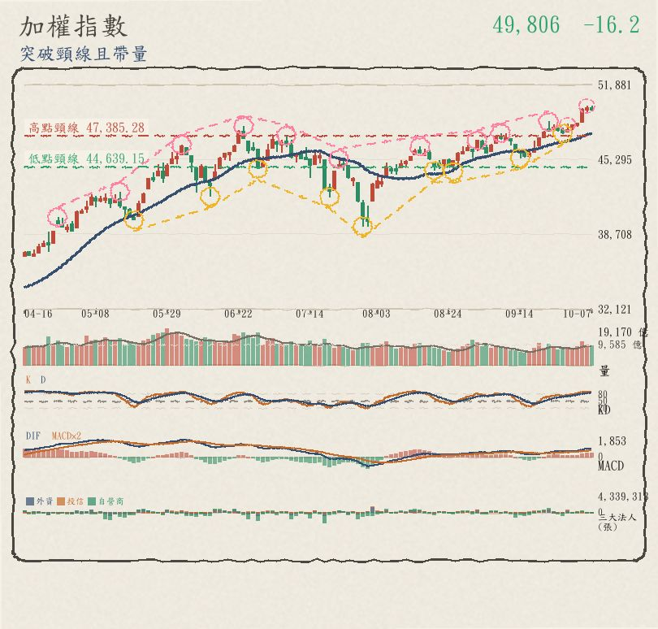
圖說：加權指數日 K（與個股圖相同標記）：黃圈＝轉折低點、粉圈＝轉折高點、虛線小圈＝還沒確認的轉折、藍線＝月線 MA20、水平虛線＝高點／低點頸線。最後一根是資料日當天。
本區塊為公開資料的技術面觀察，不構成投資建議，
不報牌、不預測、不下買賣決策。成交金額為集中市場總成交金額（含 ETF／權證），
與頁首摘要的「上市個股成交金額」口徑不同。標籤是統計，不是評分、也不是推薦。
上市 vs 上櫃（同期快篩）
加權 -0.03% vs 櫃買 -0.09%（同向） → 同向
（兩個市場分開寫，不合併成一個數字；櫃買為 TPEX 公開資料）
櫃買歷史：TPEX 逐日回補 130 根；來源：櫃買中心 www/zh-tw/indexInfo/sectinx（逐日，官方；OpenAPI tpex_index 只回當月）
（TPEX OpenAPI 只回當月，故逐日回補；歷史不足就不算該條均線並標「資料不足」，不用錯數字）
近 20 個交易日大盤狀態回溯（最新在上）（點開看逐日主狀態／量比／量價象限）
用同一支程式回算最近 20 個交易日（主狀態 S1~S8 與量比 20 皆為當日收盤當時的判定，
不是事後調整）；量比 20 未公布的日子寫「—」。
好條件最多的（前 10）
不好條件最多的（前 10）
好條件（8 項）：站上月線、月線向上、底底高、頭頭高、突破頸線、相對大盤強、攻擊量（量增＋上漲）、守住今日高檔（距今日高點 1% 內）。
不好條件（8 項）：跌破前低、今日下跌、相對大盤弱、在月線之下、量增下跌（出貨）、貼近今日低點（1% 內）、跌破昨日低點、月線下彎。
兩邊都是同一組日線資料＋盤中即時價算出來的「符合項目數」，只是把方向相反的條件分開數；
條件數不是評分或推薦，不構成投資建議。
逆勢上漲（加權下跌、個股上漲）（30 上市 21／上櫃 9）
盤中爆量（估量比 ≥ 1.5）（30 上市 19／上櫃 11）
今日疲弱（跌幅前 10）（10 上市 5／上櫃 5）
逐檔（70 檔，依盤中成交金額排序）
台積電 2330 上市
2560 -25.0（-0.97%）
高點墊高、底部不穩 盤中成交值 295.14 億・全榜第 1 名（上市第 1 名）・相對大盤 -0.14
好條件 5/8：站上月線、月線向上、頭頭高、突破頸線、守住今日高檔（距今日高點 1% 內）
不好條件 3/8：今日下跌、相對大盤弱、貼近今日低點（1% 內）
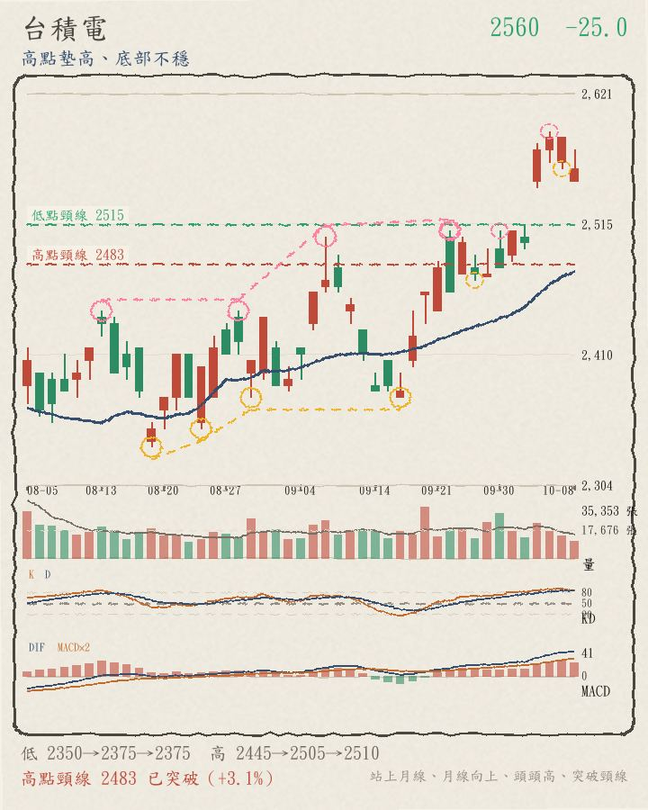
12:31 盤中 2560（-0.97%），比加權指數弱 0.14 個百分點、站上月線 2472.5，已突破高點頸線 2483，高點還在墊高（但底部沒同步墊高）。
- 月線位置：現價 2560 在月線 2472.5 之上（+3.5%）；5 日線 2551 也在月線之上（短均在上）；月線向上
- 量能：以已過交易時間推估，今天成交量約是 20 日均量的 0.74 倍（量平），比 20 日均量少很多
- 關鍵價位：高點頸線 2483 已站上；前一交易日高點 2585（低於 1.0%）；今天盤中高點 2575（低於 0.6%）；今天盤中低點 2550（高於 0.4%）
- 轉折結構：高點 2445、2505、2510 墊高（頭頭高），但低點 2350、2375、2375 沒有同步墊高；還沒確認的轉折低點 09-24 2470、10-07 2560；還沒確認的轉折高點 09-30 2510、10-06 2590（圖上虛線小圈）
南亞科 2408 上市
530 +16.0（+3.11%）
高點墊高、底部不穩 盤中成交值 261.12 億・全榜第 2 名（上市第 2 名）・相對大盤 +3.94
好條件 5/8：站上月線、月線向上、頭頭高、相對大盤強、攻擊量（量增＋上漲）
不好條件 0/8：無
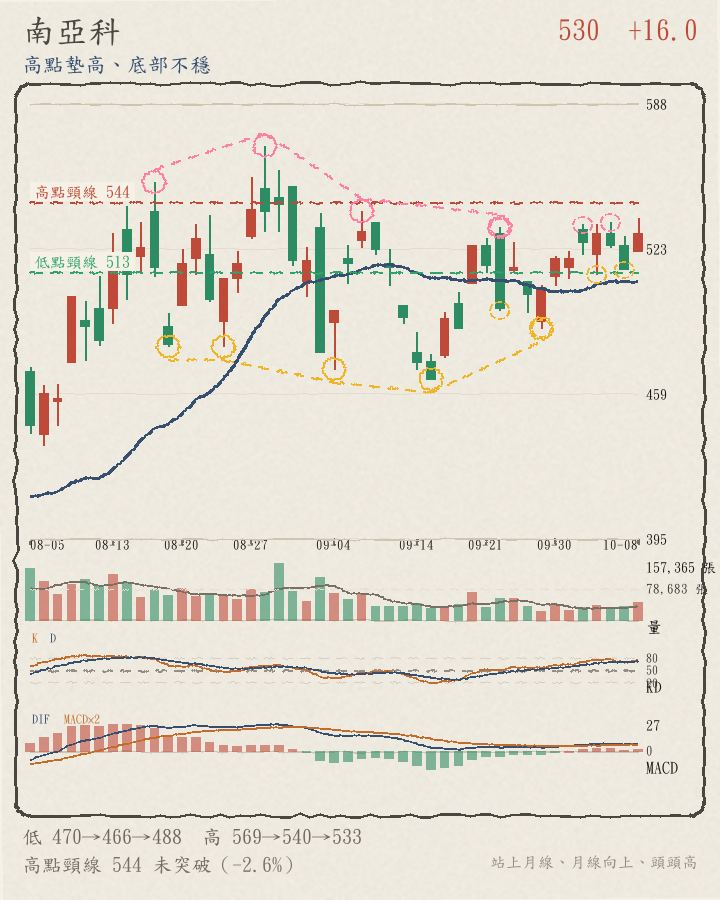
12:31 盤中 530（+3.11%），比加權指數強 3.94 個百分點、站上月線 508.8，離高點頸線 544 還差 2.6%，高點還在墊高（但底部沒同步墊高）。
- 月線位置：現價 530 在月線 508.8 之上（+4.2%）；5 日線 522.8 也在月線之上（短均在上）；月線向上
- 量能：以已過交易時間推估，今天成交量約是 20 日均量的 1.46 倍（量增），比 20 日均量大不少；上漲又量增，量價配合
- 關鍵價位：高點頸線 544 還沒突破，差 2.6%；前一交易日高點 529（高於 0.2%）；今天盤中高點 537（低於 1.3%）；今天盤中低點 522（高於 1.5%）
- 轉折結構：高點 569、540、533 墊高（頭頭高），但低點 470、465.5、488 沒有同步墊高；還沒確認的轉折低點 10-05 512、10-07 514；還沒確認的轉折高點 10-02 534、10-06 535（圖上虛線小圈）
國巨* 2327 上市
634 -13.0（-2.01%）
高點墊高、底部不穩 盤中成交值 238.92 億・全榜第 3 名（上市第 3 名）・相對大盤 -1.18
好條件 3/8：站上月線、月線向上、頭頭高
不好條件 3/8：今日下跌、相對大盤弱、量增下跌（出貨）
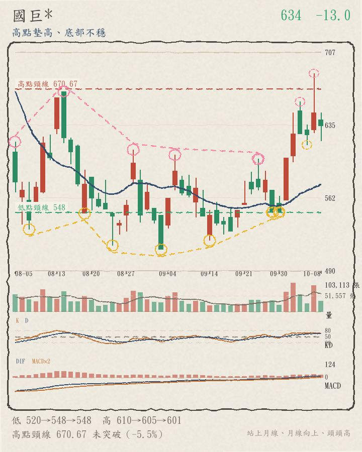
12:31 盤中 634（-2.01%），比加權指數弱 1.18 個百分點、站上月線 572.4，離高點頸線 670.67 還差 5.5%，高點還在墊高（但底部沒同步墊高）。
- 月線位置：現價 634 在月線 572.4 之上（+10.8%）；5 日線 625.2 也在月線之上（短均在上）；月線向上
- 量能：以已過交易時間推估，今天成交量約是 20 日均量的 1.22 倍（量增），比 20 日均量大不少；下跌卻量增，量價背離
- 關鍵價位：高點頸線 670.67 還沒突破，差 5.5%；前一交易日高點 686（低於 7.6%）；今天盤中高點 647（低於 2.0%）；今天盤中低點 619（高於 2.4%）
- 轉折結構：高點 610、605、601 墊高（頭頭高），但低點 520、548、548 沒有同步墊高；還沒確認的轉折低點 09-30 548、10-06 615；還沒確認的轉折高點 10-05 658、10-07 686（圖上虛線小圈）
華新科 2492 上市
420 -8.0（-1.87%）
上升趨勢（底底高＋頭頭高） 盤中成交值 233.71 億・全榜第 4 名（上市第 4 名）・相對大盤 -1.04
好條件 5/8：站上月線、月線向上、底底高、頭頭高、突破頸線
不好條件 3/8：今日下跌、相對大盤弱、量增下跌（出貨）
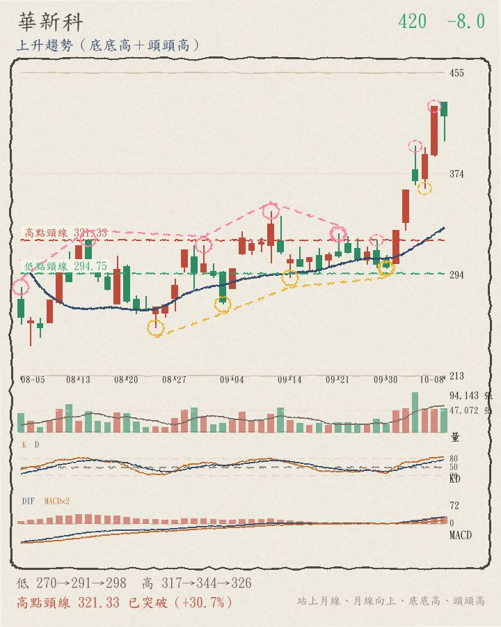
12:31 盤中 420（-1.87%），比加權指數弱 1.04 個百分點、站上月線 325.9，已突破高點頸線 321.33，轉折結構仍是底底高＋頭頭高。
- 月線位置：現價 420 在月線 325.9 之上（+28.9%）；5 日線 375.3 也在月線之上（短均在上）；月線向上
- 量能：以已過交易時間推估，今天成交量約是 20 日均量的 2.10 倍（爆量），比 20 日均量大不少；下跌卻量增，量價背離
- 關鍵價位：高點頸線 321.33 已站上；前一交易日高點 428（低於 1.9%）；今天盤中高點 431.5（低於 2.7%）；今天盤中低點 400（高於 5.0%）
- 轉折結構：低點 270、291、298.5 一路墊高、高點 317、344、326 也一路墊高，是底底高＋頭頭高；還沒確認的轉折低點 09-30 298.5、10-06 362.5；還沒確認的轉折高點 10-05 396、10-07 428（圖上虛線小圈）
聯發科 2454 上市
4715 -120.0（-2.48%）
上升趨勢（底底高＋頭頭高） 盤中成交值 209.11 億・全榜第 5 名（上市第 5 名）・相對大盤 -1.65
好條件 3/8：月線向上、底底高、頭頭高
不好條件 6/8：跌破前低、今日下跌、相對大盤弱、在月線之下、貼近今日低點（1% 內）、跌破昨日低點
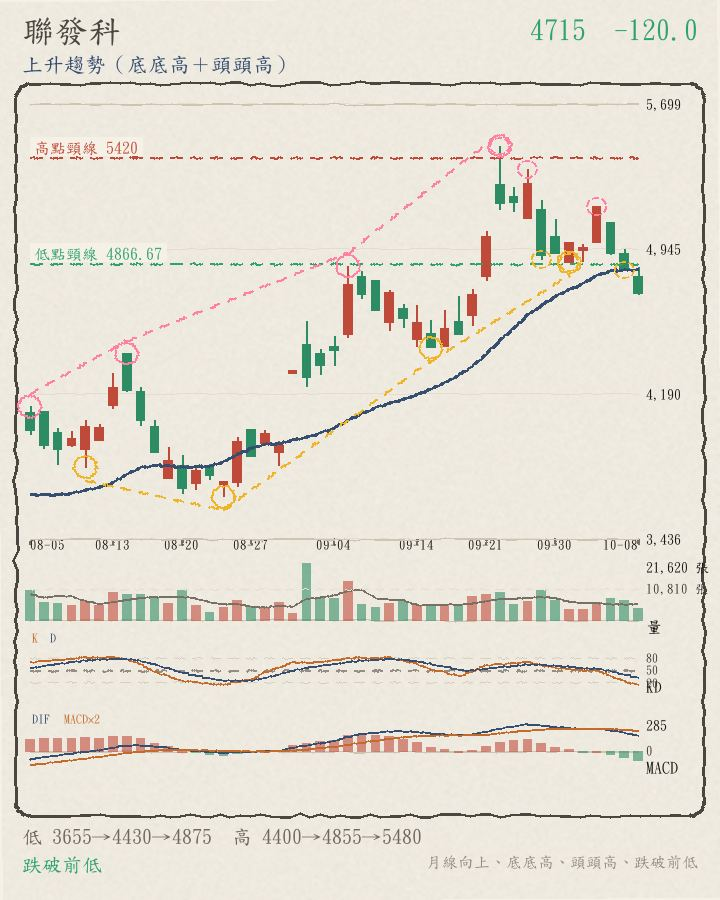
12:31 盤中 4715（-2.48%），比加權指數弱 1.65 個百分點、跌破月線 4835.5，離高點頸線 5420 還差 13.0%，轉折結構仍是底底高＋頭頭高。
- 月線位置：現價 4715 在月線 4835.5 之下（-2.5%）；5 日線 4970 也在月線之上（短均在上）；月線向上
- 量能：以已過交易時間推估，今天成交量約是 20 日均量的 0.78 倍（量平），比 20 日均量少很多
- 關鍵價位：已跌破前一個轉折低點；高點頸線 5420 還在現價上方 13.0%；前一交易日高點 4940（低於 4.6%）；今天盤中高點 4850（低於 2.8%）；今天盤中低點 4710（高於 0.1%）
- 轉折結構：低點 3655、4430、4875 一路墊高、高點 4400、4855、5480 也一路墊高，是底底高＋頭頭高；還沒確認的轉折低點 10-01 4875、10-07 4835；還沒確認的轉折高點 09-24 5360、10-05 5165（圖上虛線小圈）
環球晶 6488 上櫃
1135 -80.0（-6.58%）
高點墊高、底部不穩 盤中成交值 191.68 億・全榜第 6 名（上櫃第 1 名）・相對大盤 -5.75
好條件 4/8：站上月線、月線向上、頭頭高、突破頸線
不好條件 4/8：今日下跌、相對大盤弱、量增下跌（出貨）、跌破昨日低點
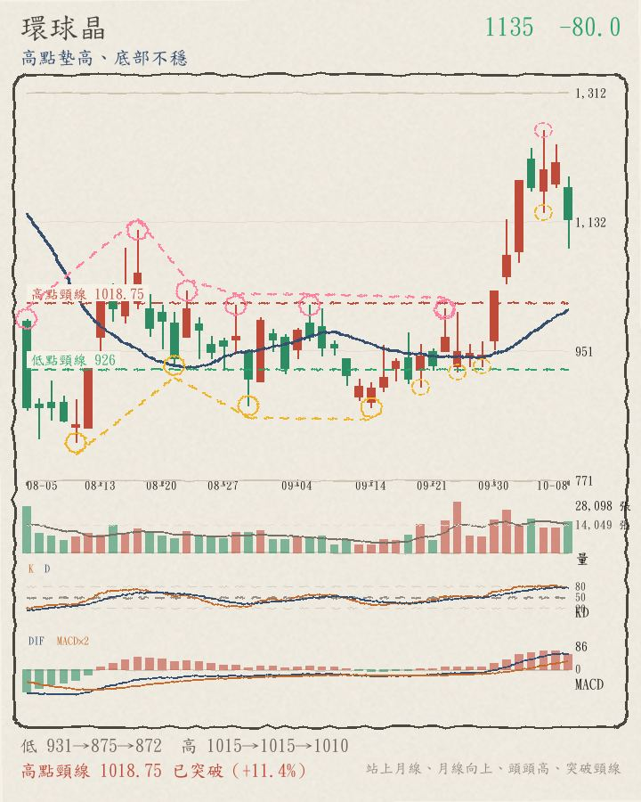
12:31 盤中 1135（-6.58%），比加權指數弱 5.75 個百分點、站上月線 999.55，已突破高點頸線 1018.75，高點還在墊高（但底部沒同步墊高）。
- 月線位置：現價 1135 在月線 999.55 之上（+13.6%）；5 日線 1175 也在月線之上（短均在上）；月線向上
- 量能：以已過交易時間推估，今天成交量約是 20 日均量的 1.83 倍（爆量），比 20 日均量大不少；下跌卻量增，量價背離
- 關鍵價位：高點頸線 1018.75 已站上；前一交易日高點 1240（低於 8.5%）；今天盤中高點 1195（低於 5.0%）；今天盤中低點 1095（高於 3.7%）
- 轉折結構：高點 1015、1015、1010 墊高（頭頭高），但低點 931、875、872 沒有同步墊高；還沒確認的轉折低點 09-29 930、10-06 1145；還沒確認的轉折高點 09-22 1010、10-06 1260（圖上虛線小圈）
南亞 1303 上市
310.5 -3.5（-1.11%）
高點墊高、底部不穩 盤中成交值 178.12 億・全榜第 7 名（上市第 6 名）・相對大盤 -0.28
好條件 4/8：站上月線、月線向上、頭頭高、突破頸線
不好條件 2/8：今日下跌、相對大盤弱
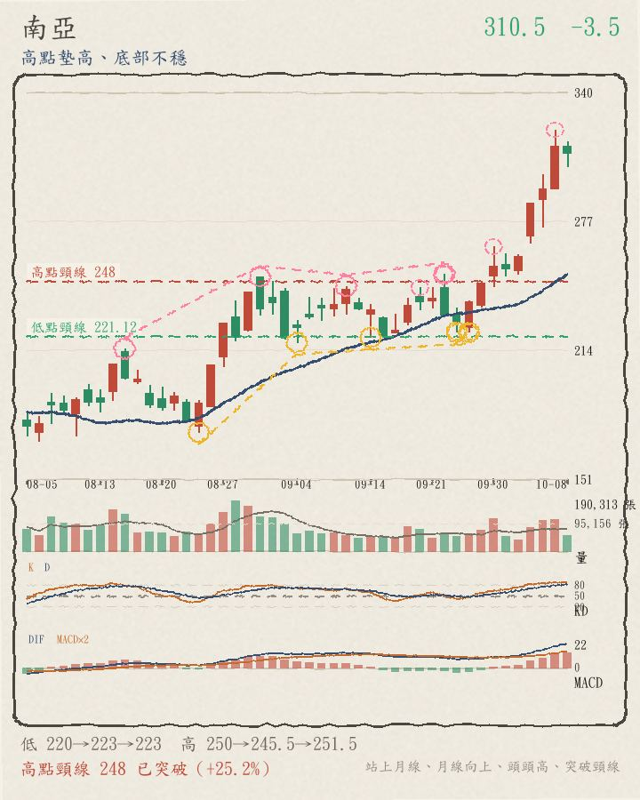
12:31 盤中 310.5（-1.11%），比加權指數弱 0.28 個百分點、站上月線 247.475，已突破高點頸線 248，高點還在墊高（但底部沒同步墊高）。
- 月線位置：現價 310.5 在月線 247.475 之上（+25.5%）；5 日線 281.4 也在月線之上（短均在上）；月線向上
- 量能：以已過交易時間推估，今天成交量約是 20 日均量的 1.06 倍（量平），比 20 日均量大一些
- 關鍵價位：高點頸線 248 已站上；前一交易日高點 322（低於 3.6%）；今天盤中高點 316（低於 1.7%）；今天盤中低點 304（高於 2.1%）
- 轉折結構：高點 250、245.5、251.5 墊高（頭頭高），但低點 220.5、223、223 沒有同步墊高；還沒確認的轉折低點 09-23 223、09-24 223；還沒確認的轉折高點 09-30 265、10-07 322（圖上虛線小圈）
川湖 2059 上市
10615 -1175.0（-9.97%）
高點墊高、底部不穩 盤中成交值 177.91 億・全榜第 8 名（上市第 7 名）・相對大盤 -9.14
好條件 1/8：頭頭高
不好條件 7/8：跌破前低、今日下跌、相對大盤弱、在月線之下、量增下跌（出貨）、跌破昨日低點、月線下彎
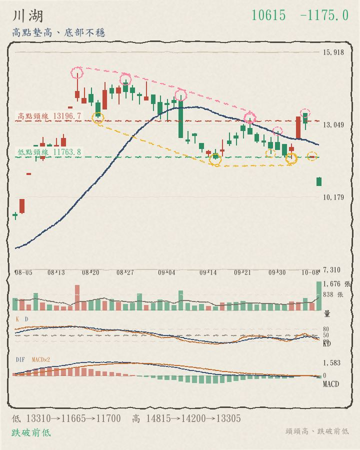
12:31 盤中 10615（-9.97%），比加權指數弱 9.14 個百分點、跌破月線 12337.2，離高點頸線 13196.7 還差 19.6%，高點還在墊高（但底部沒同步墊高）。
- 月線位置：現價 10615 在月線 12337.2 之下（-14.0%）；5 日線 12445 也在月線之上（短均在上）；月線向下
- 量能：以已過交易時間推估，今天成交量約是 20 日均量的 5.11 倍（爆量），比 20 日均量大不少；下跌卻量增，量價背離
- 關鍵價位：已跌破前一個轉折低點；高點頸線 13196.7 還在現價上方 19.6%；前一交易日高點 11790（低於 10.0%）；今天盤中高點 10965（低於 3.2%）；今天盤中低點 10615（高於 0.0%）
- 轉折結構：高點 14815、14200、13305 墊高（頭頭高），但低點 13310、11665、11700 沒有同步墊高；還沒確認的轉折低點 10-02 11700、10-07 11790；還沒確認的轉折高點 09-30 12785、10-06 13500（圖上虛線小圈）
台塑 1301 上市
81 +5.6（+7.43%）
高點墊高、底部不穩 盤中成交值 177.25 億・全榜第 9 名（上市第 8 名）・相對大盤 +8.26
好條件 6/8：站上月線、月線向上、頭頭高、突破頸線、相對大盤強、攻擊量（量增＋上漲）
不好條件 0/8：無
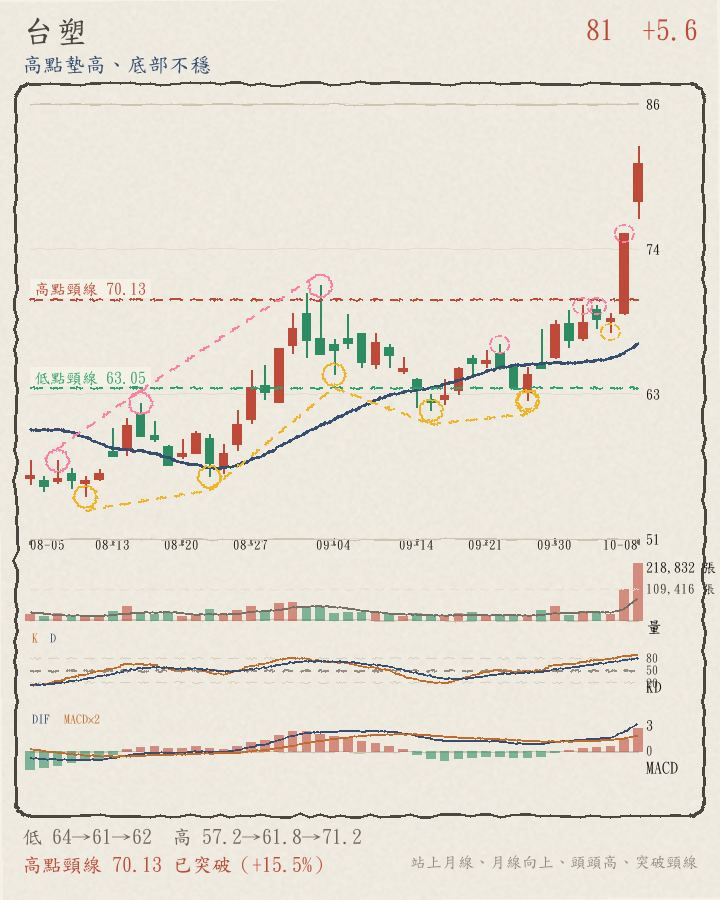
12:31 盤中 81（+7.43%），比加權指數強 8.26 個百分點、站上月線 65.81，已突破高點頸線 70.13，高點還在墊高（但底部沒同步墊高）。
- 月線位置：現價 81 在月線 65.81 之上（+23.1%）；5 日線 69.52 也在月線之上（短均在上）；月線向上
- 量能：以已過交易時間推估，今天成交量約是 20 日均量的 11.58 倍（爆量），比 20 日均量大不少；上漲又量增，量價配合
- 關鍵價位：高點頸線 70.13 已站上；前一交易日高點 75.4（高於 7.4%）；今天盤中高點 82.4（低於 1.7%）；今天盤中低點 76.6（高於 5.7%）
- 轉折結構：高點 57.2、61.8、71.2 墊高（頭頭高），但低點 64.1、61.2、62 沒有同步墊高；還沒確認的轉折低點 09-24 62、10-06 67.5；還沒確認的轉折高點 10-05 69.6、10-07 75.4（圖上虛線小圈）
世芯-KY 3661 上市
4370 +180.0（+4.30%）
高點墊高、底部不穩 盤中成交值 169.73 億・全榜第 10 名（上市第 9 名）・相對大盤 +5.13
好條件 4/8：站上月線、頭頭高、相對大盤強、攻擊量（量增＋上漲）
不好條件 1/8：月線下彎
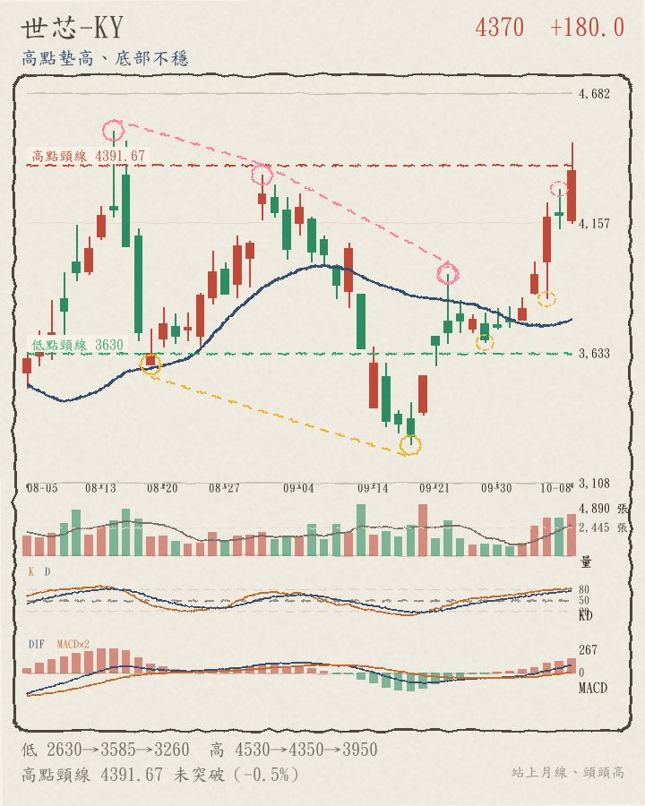
12:31 盤中 4370（+4.30%），比加權指數強 5.13 個百分點、站上月線 3749.75，離高點頸線 4391.67 還差 0.5%，高點還在墊高（但底部沒同步墊高）。
- 月線位置：現價 4370 在月線 3749.75 之上（+16.5%）；5 日線 3979 也在月線之上（短均在上）；月線向下
- 量能：以已過交易時間推估，今天成交量約是 20 日均量的 2.15 倍（爆量），比 20 日均量大不少；上漲又量增，量價配合
- 關鍵價位：高點頸線 4391.67 還沒突破，差 0.5%；前一交易日高點 4295（高於 1.7%）；今天盤中高點 4480（低於 2.5%）；今天盤中低點 4155（高於 5.2%）
- 轉折結構：高點 4530、4350、3950 墊高（頭頭高），但低點 2630、3585、3260 沒有同步墊高；還沒確認的轉折低點 09-29 3675、10-06 3850；還沒確認的轉折高點 09-22 3950、10-07 4295（圖上虛線小圈）
信驊 5274 上櫃
17440 -310.0（-1.75%）
高點墊高、底部不穩 盤中成交值 169.69 億・全榜第 11 名（上櫃第 2 名）・相對大盤 -0.92
好條件 2/8：月線向上、頭頭高
不好條件 5/8：今日下跌、相對大盤弱、在月線之下、量增下跌（出貨）、跌破昨日低點
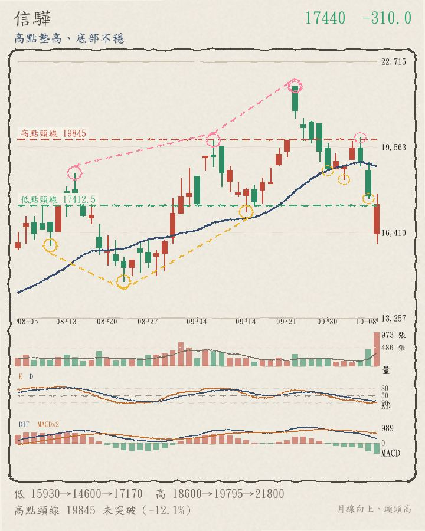
12:31 盤中 17440（-1.75%），比加權指數弱 0.92 個百分點、跌破月線 18942.2，離高點頸線 19845 還差 12.1%，高點還在墊高（但底部沒同步墊高）。
- 月線位置：現價 17440 在月線 18942.2 之下（-7.9%）；5 日線 18827 也在月線之下（短均在下）；月線向上
- 量能：以已過交易時間推估，今天成交量約是 20 日均量的 5.64 倍（爆量），比 20 日均量大不少；下跌卻量增，量價背離
- 關鍵價位：高點頸線 19845 還沒突破，差 12.1%；前一交易日高點 19000（低於 8.2%）；今天盤中高點 17840（低於 2.2%）；今天盤中低點 15975（高於 9.2%）
- 轉折結構：高點 18600、19795、21800 墊高（頭頭高），但低點 15930、14600、17170 沒有同步墊高；還沒確認的轉折低點 10-02 18355、10-07 17655；還沒確認的轉折高點 09-22 21800、10-06 19895（圖上虛線小圈）
台虹 8039 上市
313 +8.5（+2.79%）
區間或轉弱 盤中成交值 162.05 億・全榜第 12 名（上市第 10 名）・相對大盤 +3.62
好條件 4/8：站上月線、突破頸線、相對大盤強、攻擊量（量增＋上漲）
不好條件 1/8：月線下彎
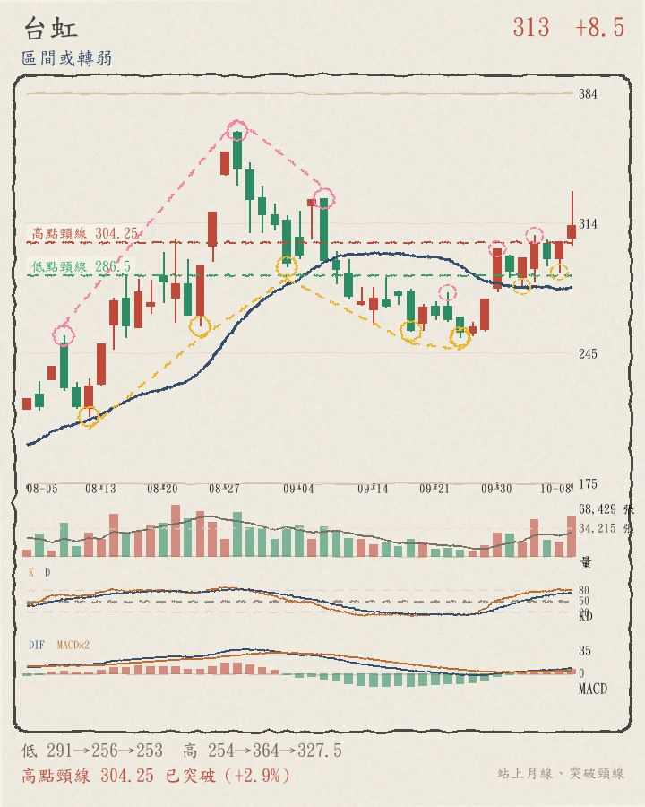
12:31 盤中 313（+2.79%），比加權指數強 3.62 個百分點、站上月線 279.05，已突破高點頸線 304.25，轉折還沒走出明顯方向。
- 月線位置：現價 313 在月線 279.05 之上（+12.2%）；5 日線 297.6 也在月線之上（短均在上）；月線向下
- 量能：以已過交易時間推估，今天成交量約是 20 日均量的 3.13 倍（爆量），比 20 日均量大不少；上漲又量增，量價配合
- 關鍵價位：高點頸線 304.25 已站上；前一交易日高點 304.5（高於 2.8%）；今天盤中高點 331.5（低於 5.6%）；今天盤中低點 302.5（高於 3.5%）
- 轉折結構：低點 291、256.5、253 與高點 254、364、327.5 都沒有明顯遞增，屬於區間震盪或轉弱；還沒確認的轉折低點 10-02 280.5、10-07 288；還沒確認的轉折高點 09-30 300.5、10-05 308（圖上虛線小圈）
臻鼎-KY 4958 上市
587 -8.0（-1.34%）
上升趨勢（底底高＋頭頭高） 盤中成交值 159.8 億・全榜第 13 名（上市第 11 名）・相對大盤 -0.51
好條件 5/8：站上月線、月線向上、底底高、頭頭高、突破頸線
不好條件 2/8：今日下跌、相對大盤弱
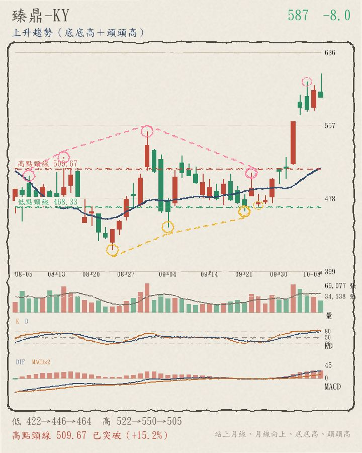
12:31 盤中 587（-1.34%），比加權指數弱 0.51 個百分點、站上月線 506.75，已突破高點頸線 509.67，轉折結構仍是底底高＋頭頭高。
- 月線位置：現價 587 在月線 506.75 之上（+15.8%）；5 日線 563.2 也在月線之上（短均在上）；月線向上
- 量能：以已過交易時間推估，今天成交量約是 20 日均量的 1.13 倍（量增），比 20 日均量大一些；下跌卻量增，量價背離
- 關鍵價位：高點頸線 509.67 已站上；前一交易日高點 600（低於 2.2%）；今天盤中高點 613（低於 4.2%）；今天盤中低點 587（高於 0.0%）
- 轉折結構：低點 421.5、446.5、463.5 一路墊高、高點 522、550、505 也一路墊高，是底底高＋頭頭高；還沒確認的轉折低點 09-21 463.5、09-23 470；還沒確認的轉折高點 09-22 505、10-06 604（圖上虛線小圈）
台燿 6274 上櫃
1750 +30.0（+1.74%）
高點墊高、底部不穩 盤中成交值 117.98 億・全榜第 14 名（上櫃第 3 名）・相對大盤 +2.57
好條件 4/8：站上月線、月線向上、頭頭高、相對大盤強
不好條件 0/8：無
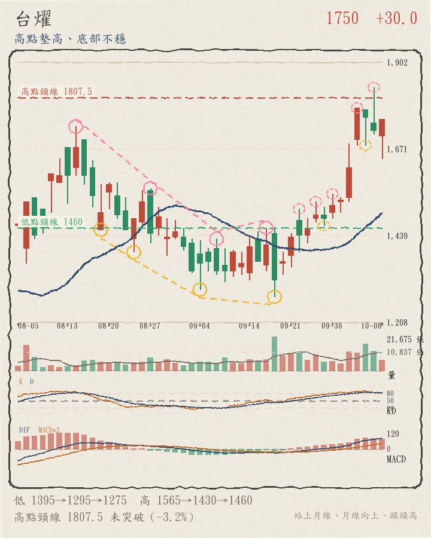
12:31 盤中 1750（+1.74%），比加權指數強 2.57 個百分點、站上月線 1479，離高點頸線 1807.5 還差 3.2%，高點還在墊高（但底部沒同步墊高）。
- 月線位置：現價 1750 在月線 1479 之上（+18.3%）；5 日線 1682 也在月線之上（短均在上）；月線向上
- 量能：以已過交易時間推估，今天成交量約是 20 日均量的 0.99 倍（量平），跟 20 日均量差不多
- 關鍵價位：高點頸線 1807.5 還沒突破，差 3.2%；前一交易日高點 1835（低於 4.6%）；今天盤中高點 1750（高於 0.0%）；今天盤中低點 1645（高於 6.4%）
- 轉折結構：高點 1565、1430、1460 墊高（頭頭高），但低點 1395、1295、1275 沒有同步墊高；還沒確認的轉折低點 09-29 1465、10-06 1680；還沒確認的轉折高點 10-05 1780、10-07 1835（圖上虛線小圈）
禾伸堂 3026 上市
884 +45.0（+5.36%）
上升趨勢（底底高＋頭頭高） 盤中成交值 113.57 億・全榜第 15 名（上市第 12 名）・相對大盤 +6.19
好條件 7/8：站上月線、月線向上、底底高、頭頭高、突破頸線、相對大盤強、攻擊量（量增＋上漲）
不好條件 0/8：無
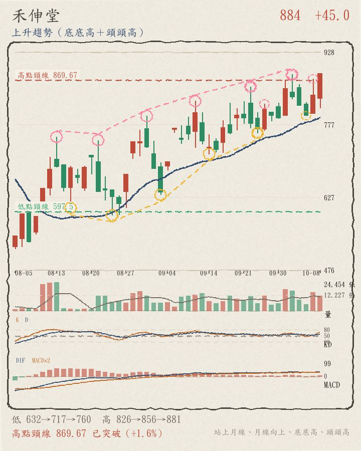
12:31 盤中 884（+5.36%），比加權指數強 6.19 個百分點、站上月線 785.65，已突破高點頸線 869.67，轉折結構仍是底底高＋頭頭高。
- 月線位置：現價 884 在月線 785.65 之上（+12.5%）；5 日線 827.8 也在月線之上（短均在上）；月線向上
- 量能：以已過交易時間推估，今天成交量約是 20 日均量的 1.63 倍（爆量），比 20 日均量大不少；上漲又量增，量價配合
- 關鍵價位：高點頸線 869.67 已站上；前一交易日高點 872（高於 1.4%）；今天盤中高點 884（高於 0.0%）；今天盤中低點 812（高於 8.9%）
- 轉折結構：低點 632、717、760 一路墊高、高點 826、856、881 也一路墊高，是底底高＋頭頭高；還沒確認的轉折低點 09-23 760、10-06 796；還沒確認的轉折高點 10-02 881、10-07 872（圖上虛線小圈）
富喬 1815 上櫃
135 +2.5（+1.89%）
上升趨勢（底底高＋頭頭高） 盤中成交值 110.31 億・全榜第 16 名（上櫃第 4 名）・相對大盤 +2.72
好條件 6/8：站上月線、月線向上、底底高、頭頭高、相對大盤強、攻擊量（量增＋上漲）
不好條件 0/8：無
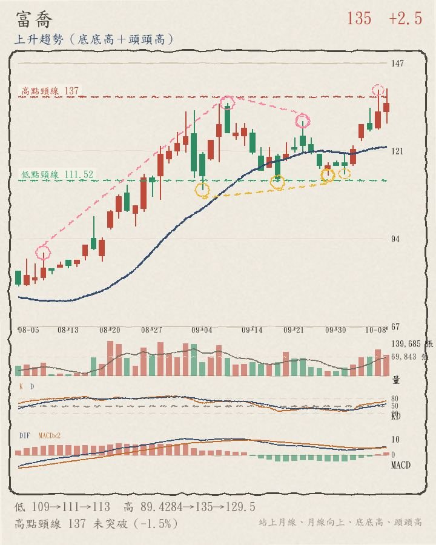
12:31 盤中 135（+1.89%），比加權指數強 2.72 個百分點、站上月線 121.429，離高點頸線 137 還差 1.5%，轉折結構仍是底底高＋頭頭高。
- 月線位置：現價 135 在月線 121.429 之上（+11.2%）；5 日線 125 也在月線之上（短均在上）；月線向上
- 量能：以已過交易時間推估，今天成交量約是 20 日均量的 1.91 倍（爆量），比 20 日均量大不少；上漲又量增，量價配合
- 關鍵價位：高點頸線 137 還沒突破，差 1.5%；前一交易日高點 139（低於 2.9%）；今天盤中高點 139.5（低於 3.2%）；今天盤中低點 129（高於 4.7%）
- 轉折結構：低點 108.571、111、113 一路墊高、高點 89.4284、135、129.5 也一路墊高，是底底高＋頭頭高；還沒確認的轉折低點 09-29 113、10-01 113.5；還沒確認的轉折高點 09-22 129.5、10-07 139（圖上虛線小圈）
金像電 2368 上市
1280 +35.0（+2.81%）
高點墊高、底部不穩 盤中成交值 102.05 億・全榜第 17 名（上市第 13 名）・相對大盤 +3.64
好條件 7/8：站上月線、月線向上、頭頭高、突破頸線、相對大盤強、攻擊量（量增＋上漲）、守住今日高檔（距今日高點 1% 內）
不好條件 0/8：無
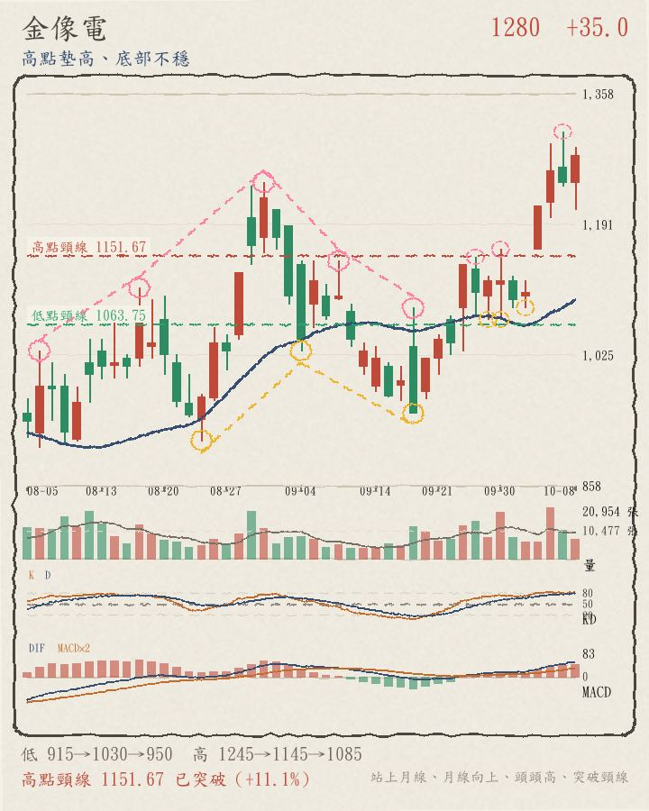
12:31 盤中 1280（+2.81%），比加權指數強 3.64 個百分點、站上月線 1084.7，已突破高點頸線 1151.67，高點還在墊高（但底部沒同步墊高）。
- 月線位置：現價 1280 在月線 1084.7 之上（+18.0%）；5 日線 1184 也在月線之上（短均在上）；月線向上
- 量能：以已過交易時間推估，今天成交量約是 20 日均量的 1.13 倍（量增），比 20 日均量大一些；上漲又量增，量價配合
- 關鍵價位：高點頸線 1151.67 已站上；前一交易日高點 1310（低於 2.3%）；今天盤中高點 1290（低於 0.8%）；今天盤中低點 1210（高於 5.8%）
- 轉折結構：高點 1245、1145、1085 墊高（頭頭高），但低點 915、1030、950 沒有同步墊高；還沒確認的轉折低點 09-30 1070、10-02 1085；還沒確認的轉折高點 09-30 1160、10-07 1310（圖上虛線小圈）
京元電子 2449 上市
295 -4.5（-1.50%）
高點墊高、底部不穩 盤中成交值 97.88 億・全榜第 18 名（上市第 14 名）・相對大盤 -0.67
好條件 4/8：站上月線、月線向上、頭頭高、守住今日高檔（距今日高點 1% 內）
不好條件 3/8：今日下跌、相對大盤弱、量增下跌（出貨）
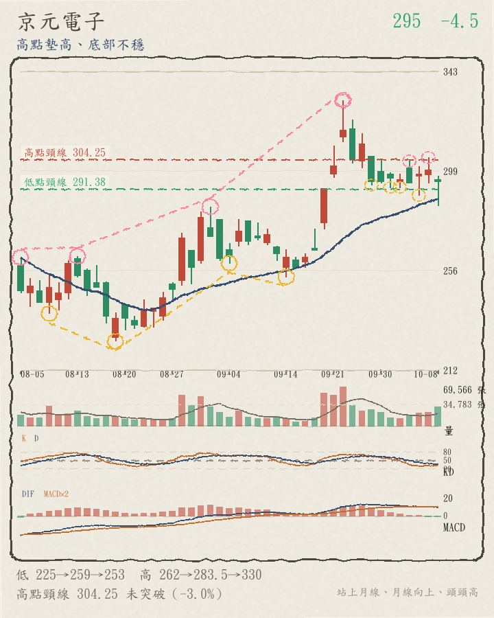
12:31 盤中 295（-1.50%），比加權指數弱 0.67 個百分點、站上月線 285.75，離高點頸線 304.25 還差 3.0%，高點還在墊高（但底部沒同步墊高）。
- 月線位置：現價 295 在月線 285.75 之上（+3.2%）；5 日線 296.6 也在月線之上（短均在上）；月線向上
- 量能：以已過交易時間推估，今天成交量約是 20 日均量的 1.74 倍（爆量），比 20 日均量大不少；下跌卻量增，量價背離
- 關鍵價位：高點頸線 304.25 還沒突破，差 3.0%；前一交易日高點 305（低於 3.3%）；今天盤中高點 297（低於 0.7%）；今天盤中低點 284（高於 3.9%）
- 轉折結構：高點 262、283.5、330 墊高（頭頭高），但低點 225、259、253 沒有同步墊高；還沒確認的轉折低點 10-02 292、10-06 288.5；還沒確認的轉折高點 10-05 303.5、10-07 305（圖上虛線小圈）
健策 3653 上市
7185 +380.0（+5.58%）
高點墊高、底部不穩 盤中成交值 95.49 億・全榜第 19 名（上市第 15 名）・相對大盤 +6.41
好條件 6/8：站上月線、月線向上、頭頭高、相對大盤強、攻擊量（量增＋上漲）、守住今日高檔（距今日高點 1% 內）
不好條件 0/8：無
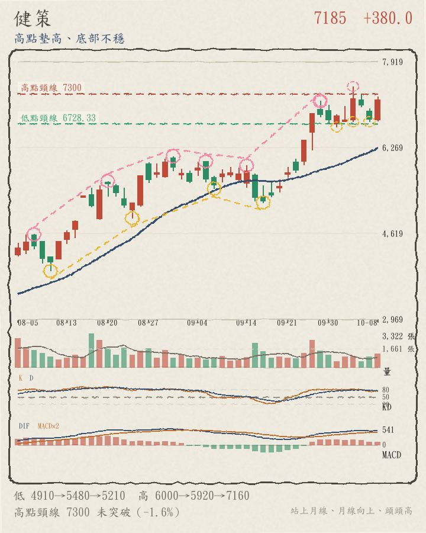
12:31 盤中 7185（+5.58%），比加權指數強 6.41 個百分點、站上月線 6176.25，離高點頸線 7300 還差 1.6%，高點還在墊高（但底部沒同步墊高）。
- 月線位置：現價 7185 在月線 6176.25 之上（+16.3%）；5 日線 6953 也在月線之上（短均在上）；月線向上
- 量能：以已過交易時間推估，今天成交量約是 20 日均量的 1.50 倍（爆量），比 20 日均量大不少；上漲又量增，量價配合
- 關鍵價位：高點頸線 7300 還沒突破，差 1.6%；前一交易日高點 7020（高於 2.4%）；今天盤中高點 7245（低於 0.8%）；今天盤中低點 6775（高於 6.1%）
- 轉折結構：高點 6000、5920、7160 墊高（頭頭高），但低點 4910、5480、5210 沒有同步墊高；還沒確認的轉折低點 10-05 6760、10-07 6760；還沒確認的轉折高點 09-29 7160、10-05 7440（圖上虛線小圈）
華邦電 2344 上市
177.5 -2.0（-1.11%）
區間或轉弱 盤中成交值 95.31 億・全榜第 20 名（上市第 16 名）・相對大盤 -0.28
好條件 2/8：站上月線、月線向上
不好條件 3/8：今日下跌、相對大盤弱、貼近今日低點（1% 內）
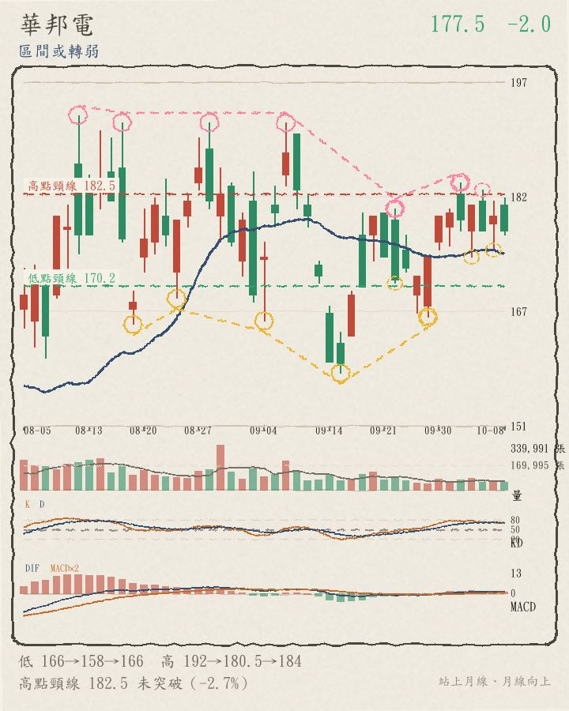
12:31 盤中 177.5（-1.11%），比加權指數弱 0.28 個百分點、站上月線 174.975，離高點頸線 182.5 還差 2.7%，轉折還沒走出明顯方向。
- 月線位置：現價 177.5 在月線 174.975 之上（+1.4%）；5 日線 179.4 也在月線之上（短均在上）；月線向上
- 量能：以已過交易時間推估，今天成交量約是 20 日均量的 0.75 倍（量平），比 20 日均量少很多
- 關鍵價位：高點頸線 182.5 還沒突破，差 2.7%；前一交易日高點 181.5（低於 2.2%）；今天盤中高點 182（低於 2.5%）；今天盤中低點 177（高於 0.3%）
- 轉折結構：低點 165.5、158.5、166 與高點 192、180.5、184 都沒有明顯遞增，屬於區間震盪或轉弱；還沒確認的轉折低點 10-05 174、10-07 175；還沒確認的轉折高點 10-02 184、10-06 183（圖上虛線小圈）
頎邦 6147 上櫃
224.5 -7.0（-3.02%）
上升趨勢（底底高＋頭頭高） 盤中成交值 89.06 億・全榜第 21 名（上櫃第 5 名）・相對大盤 -2.19
好條件 4/8：站上月線、月線向上、底底高、頭頭高
不好條件 2/8：今日下跌、相對大盤弱
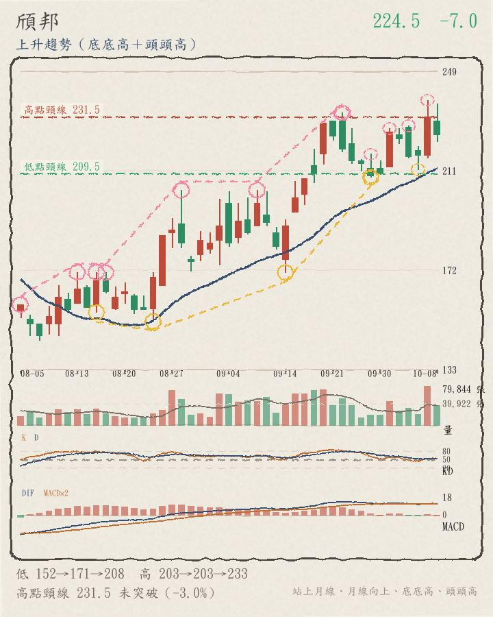
12:31 盤中 224.5（-3.02%），比加權指數弱 2.19 個百分點、站上月線 209.625，離高點頸線 231.5 還差 3.0%，轉折結構仍是底底高＋頭頭高。
- 月線位置：現價 224.5 在月線 209.625 之上（+7.1%）；5 日線 222.5 也在月線之上（短均在上）；月線向上
- 量能：以已過交易時間推估，今天成交量約是 20 日均量的 1.18 倍（量增），比 20 日均量大不少；下跌卻量增，量價背離
- 關鍵價位：高點頸線 231.5 還沒突破，差 3.0%；前一交易日高點 238（低於 5.7%）；今天盤中高點 236.5（低於 5.1%）；今天盤中低點 222（高於 1.1%）
- 轉折結構：低點 152、171、208 一路墊高、高點 203、203、233 也一路墊高，是底底高＋頭頭高；還沒確認的轉折低點 09-29 208、10-06 211；還沒確認的轉折高點 10-05 228、10-07 238（圖上虛線小圈）
大立光 3008 上市
6625 -220.0（-3.21%）
高點墊高、底部不穩 盤中成交值 87.32 億・全榜第 22 名（上市第 17 名）・相對大盤 -2.38
好條件 2/8：站上月線、頭頭高
不好條件 5/8：今日下跌、相對大盤弱、貼近今日低點（1% 內）、跌破昨日低點、月線下彎
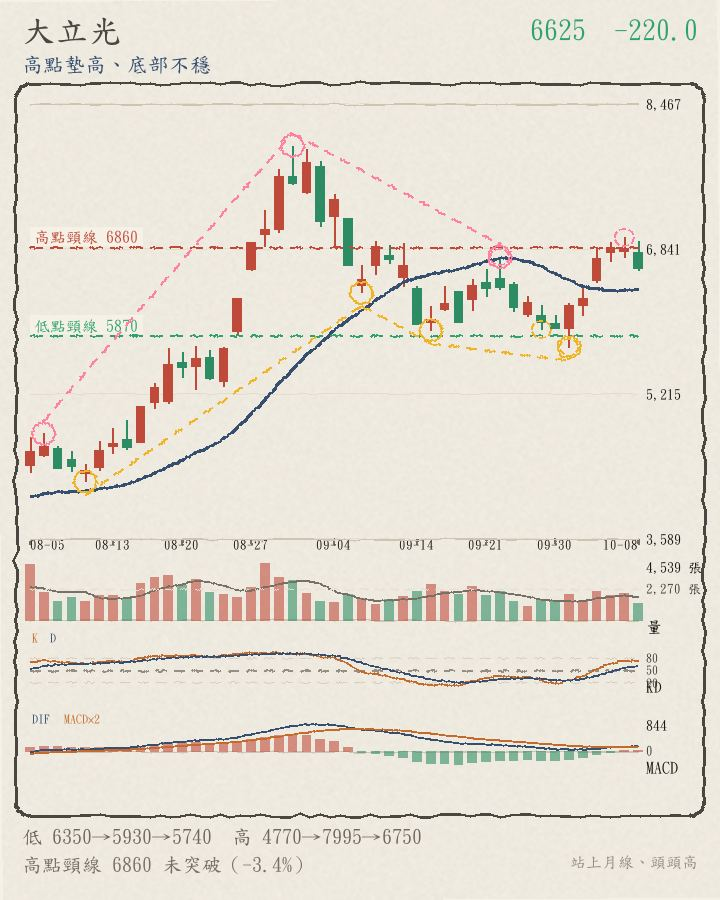
12:31 盤中 6625（-3.21%），比加權指數弱 2.38 個百分點、站上月線 6380.25，離高點頸線 6860 還差 3.4%，高點還在墊高（但底部沒同步墊高）。
- 月線位置：現價 6625 在月線 6380.25 之上（+3.8%）；5 日線 6585 也在月線之上（短均在上）；月線向下
- 量能：以已過交易時間推估，今天成交量約是 20 日均量的 0.88 倍（量平），比 20 日均量少一些
- 關鍵價位：高點頸線 6860 還沒突破，差 3.4%；前一交易日高點 6970（低於 4.9%）；今天盤中高點 6930（低於 4.4%）；今天盤中低點 6600（高於 0.4%）
- 轉折結構：高點 4770、7995、6750 墊高（頭頭高），但低點 6350、5930、5740 沒有同步墊高；還沒確認的轉折低點 09-29 5940、10-01 5740；還沒確認的轉折高點 09-22 6750、10-07 6970（圖上虛線小圈）
聯電 2303 上市
149 +0.5（+0.34%）
上升趨勢（底底高＋頭頭高） 盤中成交值 83.32 億・全榜第 23 名（上市第 18 名）・相對大盤 +1.17
好條件 5/8：月線向上、底底高、頭頭高、突破頸線、相對大盤強
不好條件 2/8：跌破前低、在月線之下
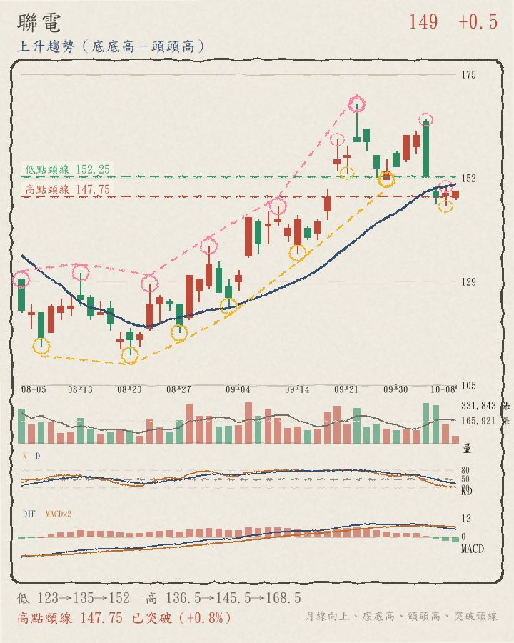
12:31 盤中 149（+0.34%），比加權指數強 1.17 個百分點、跌破月線 149.925，已突破高點頸線 147.75，轉折結構仍是底底高＋頭頭高。
- 月線位置：現價 149 在月線 149.925 之下（-0.6%）；5 日線 154.3 也在月線之上（短均在上）；月線向上
- 量能：以已過交易時間推估，今天成交量約是 20 日均量的 0.38 倍（量縮），比 20 日均量少很多；上漲但量縮，量價背離
- 關鍵價位：高點頸線 147.75 已站上；前一交易日高點 150（低於 0.7%）；今天盤中高點 149（高於 0.0%）；今天盤中低點 147（高於 1.4%）
- 轉折結構：低點 123、135、151.5 一路墊高、高點 136.5、145.5、168.5 也一路墊高，是底底高＋頭頭高；還沒確認的轉折低點 09-29 151.5、10-07 145.5；還沒確認的轉折高點 10-05 165、10-07 150（圖上虛線小圈）
光頡 3624 上櫃
175 +15.5（+9.72%）
上升趨勢（底底高＋頭頭高） 盤中成交值 83.22 億・全榜第 24 名（上櫃第 6 名）・相對大盤 +10.55
好條件 7/8：站上月線、月線向上、底底高、頭頭高、突破頸線、相對大盤強、攻擊量（量增＋上漲）
不好條件 0/8：無
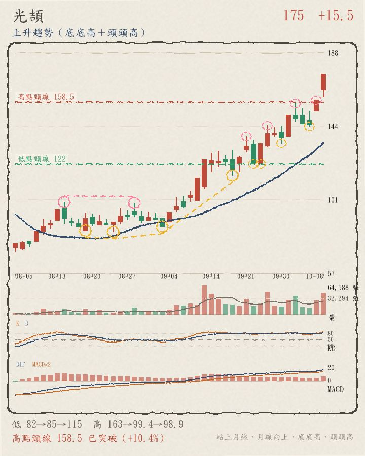
12:31 盤中 175（+9.72%），比加權指數強 10.55 個百分點、站上月線 130.405，已突破高點頸線 158.5，轉折結構仍是底底高＋頭頭高。
- 月線位置：現價 175 在月線 130.405 之上（+34.2%）；5 日線 149.9 也在月線之上（短均在上）；月線向上
- 量能：以已過交易時間推估，今天成交量約是 20 日均量的 2.23 倍（爆量），比 20 日均量大不少；上漲又量增，量價配合
- 關鍵價位：高點頸線 158.5 已站上；前一交易日高點 159.5（高於 9.7%）；今天盤中高點 175（高於 0.0%）；今天盤中低點 161.5（高於 8.4%）
- 轉折結構：低點 81.8、84.8、115 一路墊高、高點 163、99.4、98.9 也一路墊高，是底底高＋頭頭高；還沒確認的轉折低點 09-30 134、10-06 144；還沒確認的轉折高點 10-02 157.5、10-07 159.5（圖上虛線小圈）
台玻 1802 上市
63.8 -1.9（-2.89%）
高點墊高、底部不穩 盤中成交值 82.92 億・全榜第 25 名（上市第 19 名）・相對大盤 -2.06
好條件 4/8：站上月線、月線向上、頭頭高、突破頸線
不好條件 3/8：今日下跌、相對大盤弱、量增下跌（出貨）
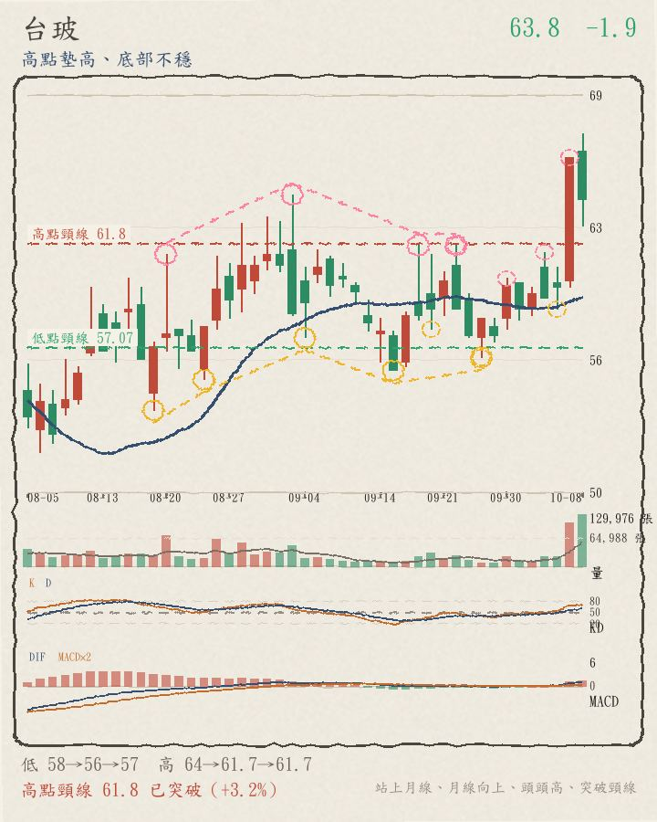
12:31 盤中 63.8（-2.89%），比加權指數弱 2.06 個百分點、站上月線 59.15，已突破高點頸線 61.8，高點還在墊高（但底部沒同步墊高）。
- 月線位置：現價 63.8 在月線 59.15 之上（+7.9%）；5 日線 60.62 也在月線之上（短均在上）；月線向上
- 量能：以已過交易時間推估，今天成交量約是 20 日均量的 9.88 倍（爆量），比 20 日均量大不少；下跌卻量增，量價背離
- 關鍵價位：高點頸線 61.8 已站上；前一交易日高點 65.7（低於 2.9%）；今天盤中高點 66.8（低於 4.5%）；今天盤中低點 62.6（高於 1.9%）
- 轉折結構：高點 64、61.7、61.7 墊高（頭頭高），但低點 57.5、56、56.6 沒有同步墊高；還沒確認的轉折低點 09-24 56.6、10-06 58.8；還沒確認的轉折高點 10-05 61.4、10-07 65.7（圖上虛線小圈）
奇鋐 3017 上市
3440 -105.0（-2.96%）
高點墊高、底部不穩 盤中成交值 81.8 億・全榜第 26 名（上市第 20 名）・相對大盤 -2.13
好條件 3/8：站上月線、月線向上、頭頭高
不好條件 4/8：今日下跌、相對大盤弱、貼近今日低點（1% 內）、跌破昨日低點
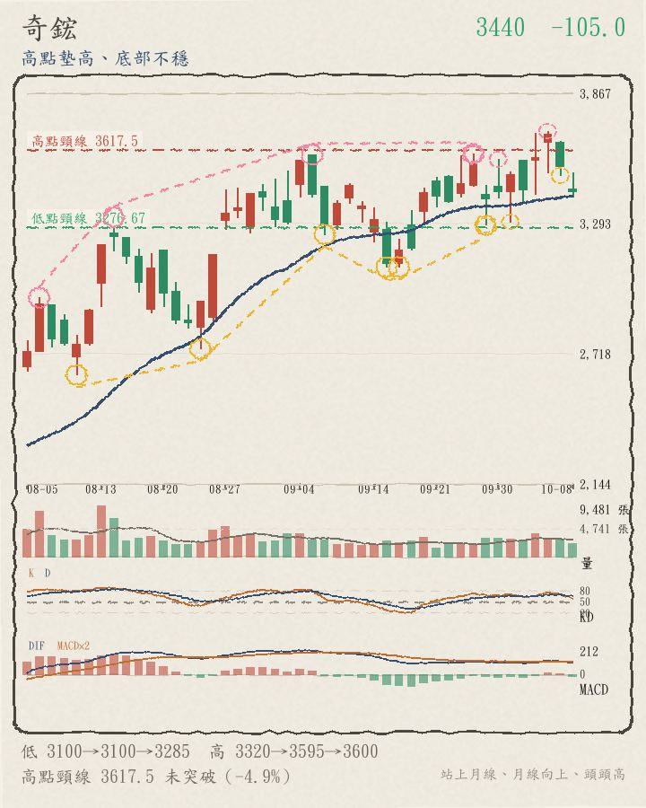
12:31 盤中 3440（-2.96%），比加權指數弱 2.13 個百分點、站上月線 3407，離高點頸線 3617.5 還差 4.9%，高點還在墊高（但底部沒同步墊高）。
- 月線位置：現價 3440 在月線 3407 之上（+1.0%）；5 日線 3553 也在月線之上（短均在上）；月線向上
- 量能：以已過交易時間推估，今天成交量約是 20 日均量的 1.08 倍（量平），比 20 日均量大一些
- 關鍵價位：高點頸線 3617.5 還沒突破，差 4.9%；前一交易日高點 3655（低於 5.9%）；今天盤中高點 3515（低於 2.1%）；今天盤中低點 3410（高於 0.9%）
- 轉折結構：高點 3320、3595、3600 墊高（頭頭高），但低點 3100、3100、3285 沒有同步墊高；還沒確認的轉折低點 10-01 3300、10-07 3505；還沒確認的轉折高點 09-30 3575、10-06 3700（圖上虛線小圈）
雙鴻 3324 上櫃
1510 -15.0（-0.98%）
高點墊高、底部不穩 盤中成交值 79.05 億・全榜第 27 名（上櫃第 7 名）・相對大盤 -0.15
好條件 3/8：站上月線、月線向上、頭頭高
不好條件 3/8：今日下跌、相對大盤弱、量增下跌（出貨）
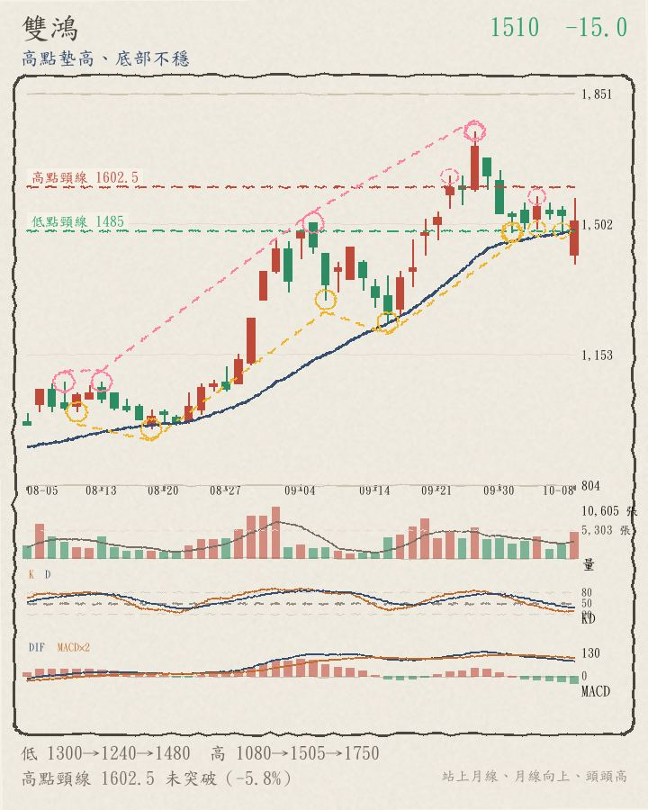
12:31 盤中 1510（-0.98%），比加權指數弱 0.15 個百分點、站上月線 1476.75，離高點頸線 1602.5 還差 5.8%，高點還在墊高（但底部沒同步墊高）。
- 月線位置：現價 1510 在月線 1476.75 之上（+2.2%）；5 日線 1527 也在月線之上（短均在上）；月線向上
- 量能：以已過交易時間推估，今天成交量約是 20 日均量的 1.88 倍（爆量），比 20 日均量大不少；下跌卻量增，量價背離
- 關鍵價位：高點頸線 1602.5 還沒突破，差 5.8%；前一交易日高點 1550（低於 2.6%）；今天盤中高點 1570（低於 3.8%）；今天盤中低點 1395（高於 8.2%）
- 轉折結構：高點 1080、1505、1750 墊高（頭頭高），但低點 1300、1240、1480 沒有同步墊高；還沒確認的轉折低點 10-05 1490、10-07 1485；還沒確認的轉折高點 09-24 1750、10-05 1575（圖上虛線小圈）
台光電 2383 上市
6000 +50.0（+0.84%）
高點墊高、底部不穩 盤中成交值 78.36 億・全榜第 28 名（上市第 21 名）・相對大盤 +1.67
好條件 4/8：站上月線、月線向上、頭頭高、相對大盤強
不好條件 0/8：無
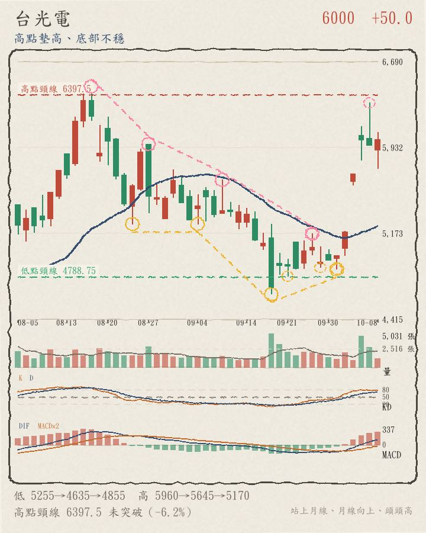
12:31 盤中 6000（+0.84%），比加權指數強 1.67 個百分點、站上月線 5203.5，離高點頸線 6397.5 還差 6.2%，高點還在墊高（但底部沒同步墊高）。
- 月線位置：現價 6000 在月線 5203.5 之上（+15.3%）；5 日線 5561 也在月線之上（短均在上）；月線向上
- 量能：以已過交易時間推估，今天成交量約是 20 日均量的 0.84 倍（量平），比 20 日均量少很多；上漲但量縮，量價背離
- 關鍵價位：高點頸線 6397.5 還沒突破，差 6.2%；前一交易日高點 6325（低於 5.1%）；今天盤中高點 6065（低於 1.1%）；今天盤中低點 5745（高於 4.4%）
- 轉折結構：高點 5960、5645、5170 墊高（頭頭高），但低點 5255、4635、4855 沒有同步墊高；還沒確認的轉折低點 09-29 4870、10-01 4855；還沒確認的轉折高點 09-24 5170、10-07 6325（圖上虛線小圈）
欣興 3037 上市
1260 -45.0（-3.45%）
高點墊高、底部不穩 盤中成交值 77.31 億・全榜第 29 名（上市第 22 名）・相對大盤 -2.62
好條件 4/8：站上月線、月線向上、頭頭高、突破頸線
不好條件 4/8：今日下跌、相對大盤弱、貼近今日低點（1% 內）、跌破昨日低點
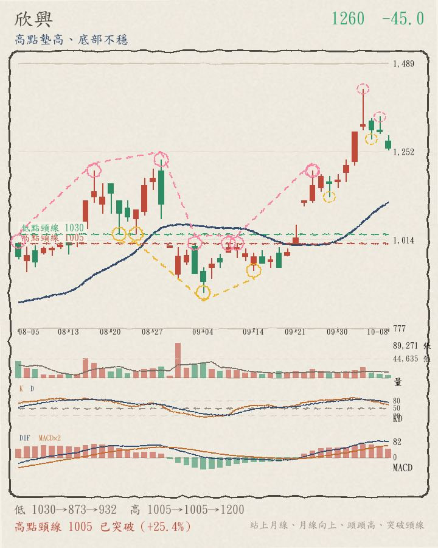
12:31 盤中 1260（-3.45%），比加權指數弱 2.62 個百分點、站上月線 1100.3，已突破高點頸線 1005，高點還在墊高（但底部沒同步墊高）。
- 月線位置：現價 1260 在月線 1100.3 之上（+14.5%）；5 日線 1292 也在月線之上（短均在上）；月線向上
- 量能：以已過交易時間推估，今天成交量約是 20 日均量的 0.51 倍（量縮），比 20 日均量少很多
- 關鍵價位：高點頸線 1005 已站上；前一交易日高點 1345（低於 6.3%）；今天盤中高點 1295（低於 2.7%）；今天盤中低點 1255（高於 0.4%）
- 轉折結構：高點 1005、1005、1200 墊高（頭頭高），但低點 1030、873、932 沒有同步墊高；還沒確認的轉折低點 09-29 1130、10-06 1285；還沒確認的轉折高點 10-05 1420、10-07 1345（圖上虛線小圈）
創意 3443 上市
8405 -55.0（-0.65%）
上升趨勢（底底高＋頭頭高） 盤中成交值 76.57 億・全榜第 30 名（上市第 23 名）・相對大盤 +0.18
好條件 5/8：站上月線、月線向上、底底高、頭頭高、相對大盤強
不好條件 2/8：今日下跌、貼近今日低點（1% 內）
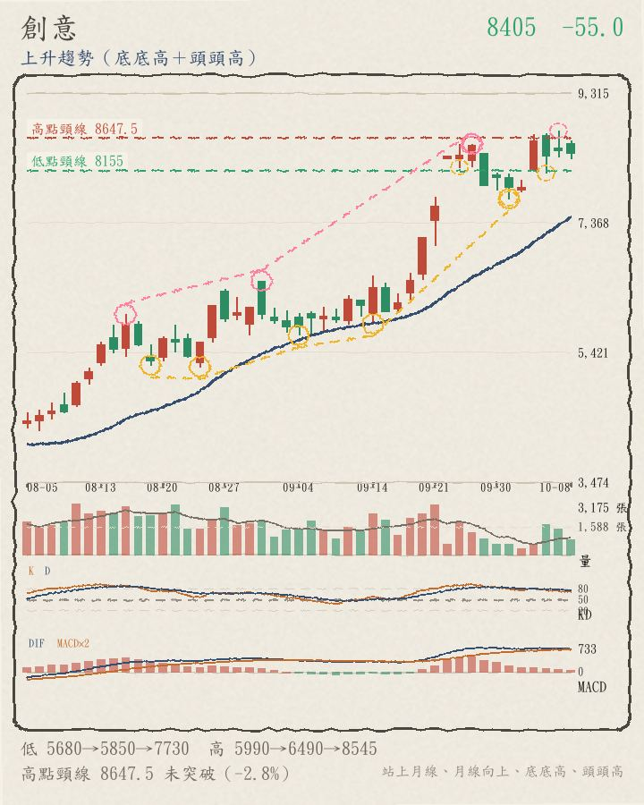
12:31 盤中 8405（-0.65%），比加權指數強 0.18 個百分點、站上月線 7329.25，離高點頸線 8647.5 還差 2.8%，轉折結構仍是底底高＋頭頭高。
- 月線位置：現價 8405 在月線 7329.25 之上（+14.7%）；5 日線 8247 也在月線之上（短均在上）；月線向上
- 量能：以已過交易時間推估，今天成交量約是 20 日均量的 0.76 倍（量平），比 20 日均量少很多
- 關鍵價位：高點頸線 8647.5 還沒突破，差 2.8%；前一交易日高點 8750（低於 3.9%）；今天盤中高點 8600（低於 2.3%）；今天盤中低點 8325（高於 1.0%）
- 轉折結構：低點 5680、5850、7730 一路墊高、高點 5990、6490、8545 也一路墊高，是底底高＋頭頭高；還沒確認的轉折低點 10-01 7730、10-06 8110；還沒確認的轉折高點 09-24 8545、10-07 8750（圖上虛線小圈）
穩懋 3105 上櫃
583 -5.0（-0.85%）
高點墊高、底部不穩 盤中成交值 76.33 億・全榜第 31 名（上櫃第 8 名）・相對大盤 -0.02
好條件 4/8：站上月線、月線向上、頭頭高、突破頸線
不好條件 2/8：今日下跌、相對大盤弱
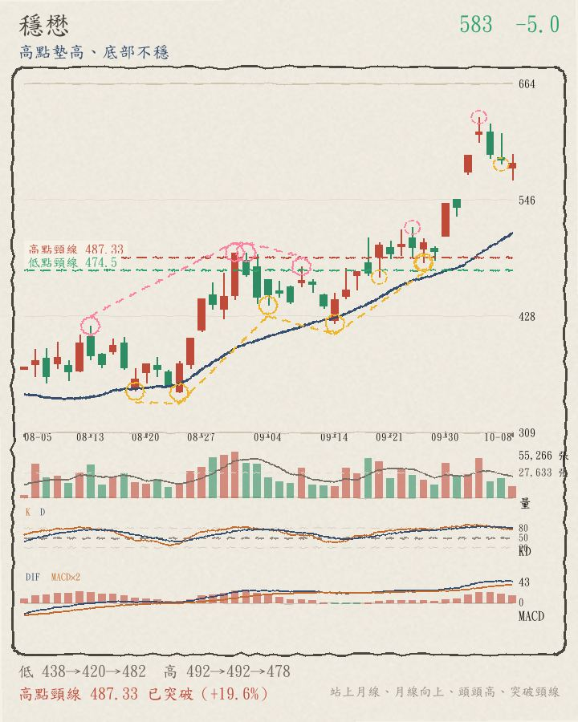
12:31 盤中 583（-0.85%），比加權指數弱 0.02 個百分點、站上月線 504.775，已突破高點頸線 487.33，高點還在墊高（但底部沒同步墊高）。
- 月線位置：現價 583 在月線 504.775 之上（+15.5%）；5 日線 584.8 也在月線之上（短均在上）；月線向上
- 量能：以已過交易時間推估，今天成交量約是 20 日均量的 0.61 倍（量縮），比 20 日均量少很多
- 關鍵價位：高點頸線 487.33 已站上；前一交易日高點 613（低於 4.9%）；今天盤中高點 592（低於 1.5%）；今天盤中低點 566（高於 3.0%）
- 轉折結構：高點 492、492、478 墊高（頭頭高），但低點 438.5、420、482 沒有同步墊高；還沒確認的轉折低點 09-24 482、10-07 582；還沒確認的轉折高點 09-23 518、10-05 630（圖上虛線小圈）
緯創 3231 上市
189 +4.0（+2.16%）
高點墊高、底部不穩 盤中成交值 72.45 億・全榜第 32 名（上市第 24 名）・相對大盤 +2.99
好條件 4/8：站上月線、頭頭高、相對大盤強、守住今日高檔（距今日高點 1% 內）
不好條件 1/8：月線下彎
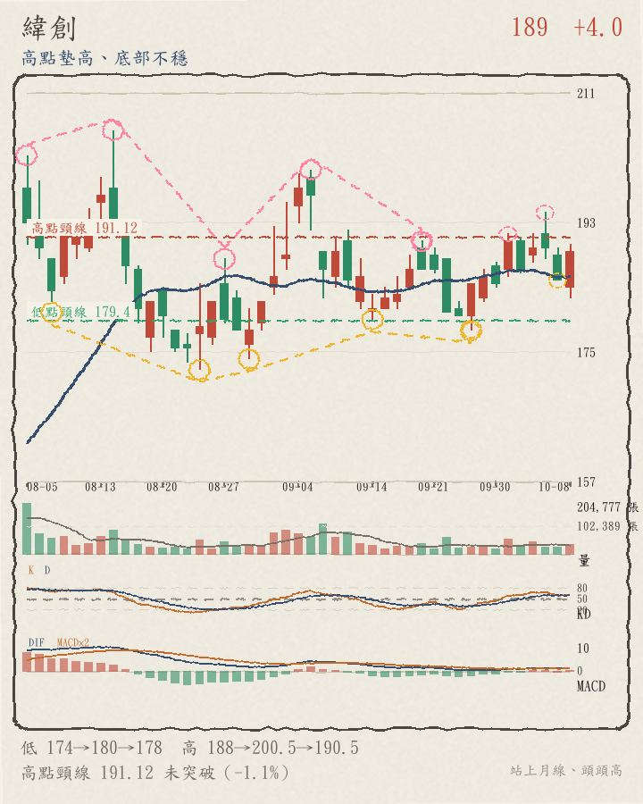
12:31 盤中 189（+2.16%），比加權指數強 2.99 個百分點、站上月線 185.4，離高點頸線 191.12 還差 1.1%，高點還在墊高（但底部沒同步墊高）。
- 月線位置：現價 189 在月線 185.4 之上（+1.9%）；5 日線 188.2 也在月線之上（短均在上）；月線向下
- 量能：以已過交易時間推估，今天成交量約是 20 日均量的 1.09 倍（量平），比 20 日均量大一些
- 關鍵價位：高點頸線 191.12 還沒突破，差 1.1%；前一交易日高點 189.5（低於 0.3%）；今天盤中高點 190（低於 0.5%）；今天盤中低點 182.5（高於 3.6%）
- 轉折結構：高點 188、200.5、190.5 墊高（頭頭高），但低點 174、179.5、178 沒有同步墊高；還沒確認的轉折低點 09-24 178、10-07 185；還沒確認的轉折高點 10-01 191.5、10-06 194.5（圖上虛線小圈）
日月光投控 3711 上市
738 +6.0（+0.82%）
上升趨勢（底底高＋頭頭高） 盤中成交值 68.54 億・全榜第 33 名（上市第 25 名）・相對大盤 +1.65
好條件 6/8：站上月線、月線向上、底底高、頭頭高、突破頸線、相對大盤強
不好條件 0/8：無
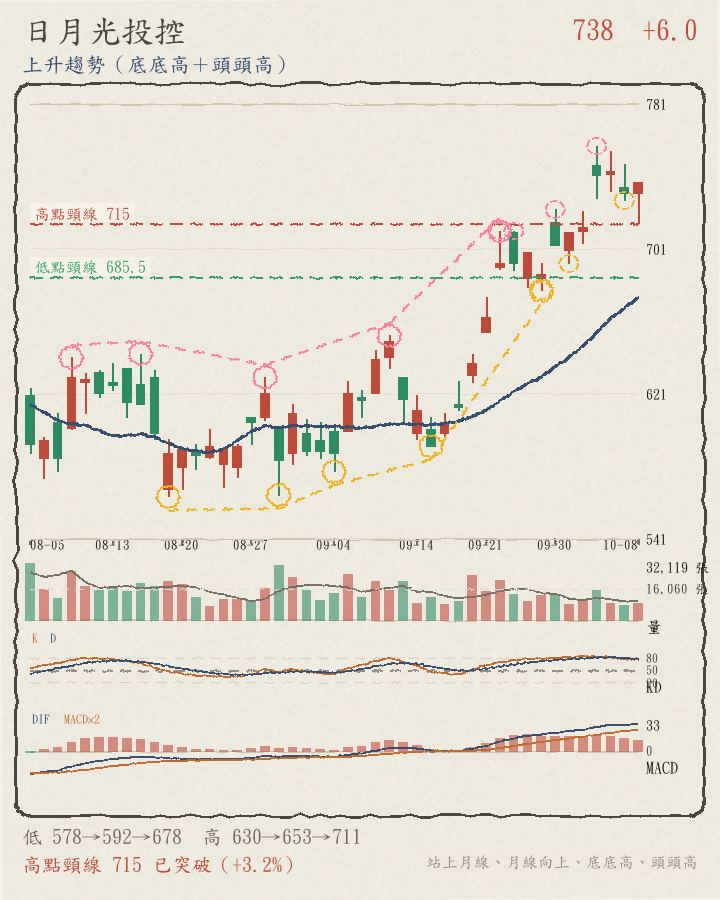
12:31 盤中 738（+0.82%），比加權指數強 1.65 個百分點、站上月線 668.3，已突破高點頸線 715，轉折結構仍是底底高＋頭頭高。
- 月線位置：現價 738 在月線 668.3 之上（+10.4%）；5 日線 728.2 也在月線之上（短均在上）；月線向上
- 量能：以已過交易時間推估，今天成交量約是 20 日均量的 0.79 倍（量平），比 20 日均量少很多；上漲但量縮，量價背離
- 關鍵價位：高點頸線 715 已站上；前一交易日高點 748（低於 1.3%）；今天盤中高點 738（高於 0.0%）；今天盤中低點 715（高於 3.2%）
- 轉折結構：低點 578、592、678 一路墊高、高點 630、653、711 也一路墊高，是底底高＋頭頭高；還沒確認的轉折低點 10-01 693、10-07 728；還沒確認的轉折高點 09-30 723、10-05 758（圖上虛線小圈）
友達 2409 上市
36.85 -1.1（-2.90%）
高點墊高、底部不穩 盤中成交值 68.48 億・全榜第 34 名（上市第 26 名）・相對大盤 -2.07
好條件 4/8：站上月線、月線向上、頭頭高、突破頸線
不好條件 4/8：今日下跌、相對大盤弱、貼近今日低點（1% 內）、跌破昨日低點
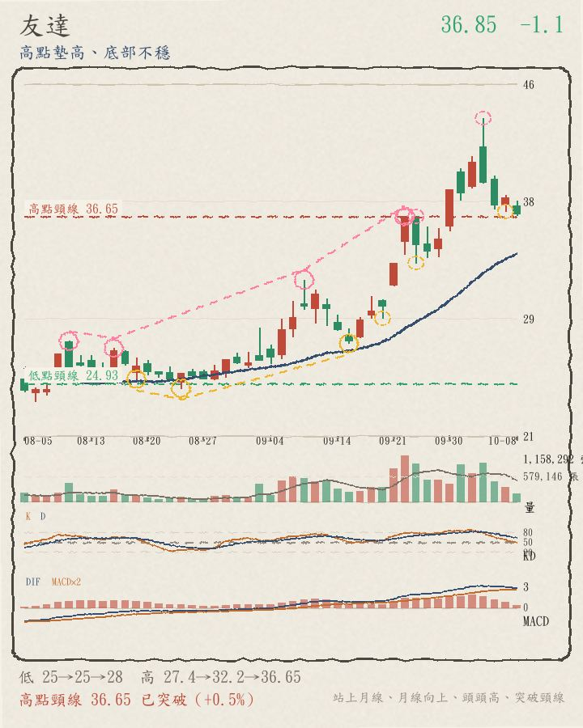
12:31 盤中 36.85（-2.90%），比加權指數弱 2.07 個百分點、站上月線 33.678，已突破高點頸線 36.65，高點還在墊高（但底部沒同步墊高）。
- 月線位置：現價 36.85 在月線 33.678 之上（+9.4%）；5 日線 38.64 也在月線之上（短均在上）；月線向上
- 量能：以已過交易時間推估，今天成交量約是 20 日均量的 0.40 倍（量縮），比 20 日均量少很多
- 關鍵價位：高點頸線 36.65 已站上；前一交易日高點 38.15（低於 3.4%）；今天盤中高點 37.75（低於 2.4%）；今天盤中低點 36.7（高於 0.4%）
- 轉折結構：高點 27.4、32.2、36.65 墊高（頭頭高），但低點 25.25、24.6、27.75 沒有同步墊高；還沒確認的轉折低點 09-23 33.4、10-07 37；還沒確認的轉折高點 09-23 36.65、10-05 43.55（圖上虛線小圈）
智邦 2345 上市
2095 +80.0（+3.97%）
高點墊高、底部不穩 盤中成交值 68.19 億・全榜第 35 名（上市第 27 名）・相對大盤 +4.80
好條件 4/8：站上月線、頭頭高、相對大盤強、守住今日高檔（距今日高點 1% 內）
不好條件 1/8：月線下彎
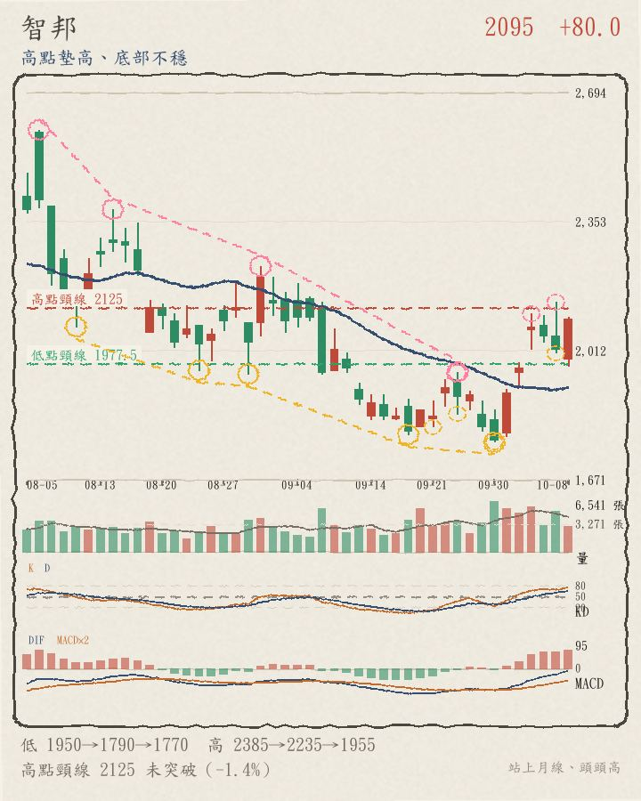
12:31 盤中 2095（+3.97%），比加權指數強 4.80 個百分點、站上月線 1908，離高點頸線 2125 還差 1.4%，高點還在墊高（但底部沒同步墊高）。
- 月線位置：現價 2095 在月線 1908 之上（+9.8%）；5 日線 2001 也在月線之上（短均在上）；月線向下
- 量能：以已過交易時間推估，今天成交量約是 20 日均量的 1.08 倍（量平），比 20 日均量大一些
- 關鍵價位：高點頸線 2125 還沒突破，差 1.4%；前一交易日高點 2140（低於 2.1%）；今天盤中高點 2100（低於 0.2%）；今天盤中低點 1970（高於 6.3%）
- 轉折結構：高點 2385、2235、1955 墊高（頭頭高），但低點 1950、1790、1770 沒有同步墊高；還沒確認的轉折低點 09-30 1770、10-07 2005；還沒確認的轉折高點 10-05 2110、10-07 2140（圖上虛線小圈）
貿聯-KY 3665 上市
2340 +25.0（+1.08%）
高點墊高、底部不穩 盤中成交值 66.15 億・全榜第 36 名（上市第 28 名）・相對大盤 +1.91
好條件 4/8：站上月線、月線向上、頭頭高、相對大盤強
不好條件 0/8：無
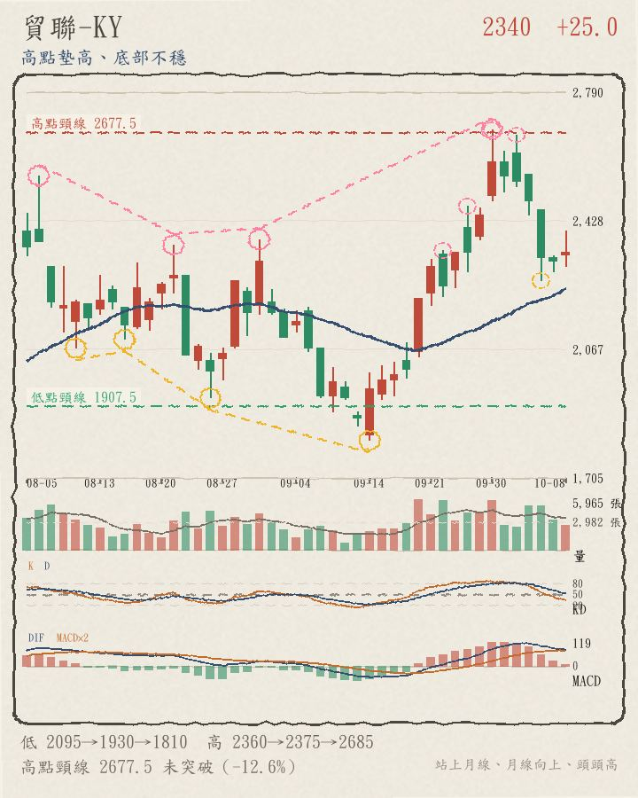
12:31 盤中 2340（+1.08%），比加權指數強 1.91 個百分點、站上月線 2217.5，離高點頸線 2677.5 還差 12.6%，高點還在墊高（但底部沒同步墊高）。
- 月線位置：現價 2340 在月線 2217.5 之上（+5.5%）；5 日線 2444 也在月線之上（短均在上）；月線向上
- 量能：以已過交易時間推估，今天成交量約是 20 日均量的 1.04 倍（量平），跟 20 日均量差不多
- 關鍵價位：高點頸線 2677.5 還沒突破，差 12.6%；前一交易日高點 2330（高於 0.4%）；今天盤中高點 2400（低於 2.5%）；今天盤中低點 2300（高於 1.7%）
- 轉折結構：高點 2360、2375、2685 墊高（頭頭高），但低點 2095、1930、1810 沒有同步墊高；還沒確認的轉折低點 10-06 2260；還沒確認的轉折高點 09-30 2685、10-02 2670（圖上虛線小圈）
合晶 6182 上櫃
129 -6.0（-4.44%）
高點墊高、底部不穩 盤中成交值 65.07 億・全榜第 37 名（上櫃第 9 名）・相對大盤 -3.61
好條件 3/8：站上月線、月線向上、頭頭高
不好條件 2/8：今日下跌、相對大盤弱
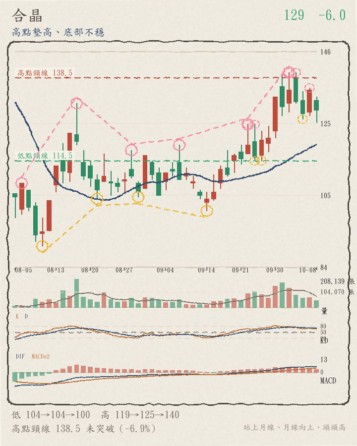
12:31 盤中 129（-4.44%），比加權指數弱 3.61 個百分點、站上月線 118.175，離高點頸線 138.5 還差 6.9%，高點還在墊高（但底部沒同步墊高）。
- 月線位置：現價 129 在月線 118.175 之上（+9.2%）；5 日線 131.9 也在月線之上（短均在上）；月線向上
- 量能：以已過交易時間推估，今天成交量約是 20 日均量的 0.90 倍（量平），比 20 日均量少一些
- 關鍵價位：高點頸線 138.5 還沒突破，差 6.9%；前一交易日高點 135.5（低於 4.8%）；今天盤中高點 133（低於 3.0%）；今天盤中低點 125.5（高於 2.8%）
- 轉折結構：高點 119、125、140 墊高（頭頭高），但低點 103.5、104、100 沒有同步墊高；還沒確認的轉折低點 09-24 114.5、10-06 126.5；還沒確認的轉折高點 10-05 140、10-07 135.5（圖上虛線小圈）
聯亞 3081 上櫃
2975 -165.0（-5.25%）
高點墊高、底部不穩 盤中成交值 65.06 億・全榜第 38 名（上櫃第 10 名）・相對大盤 -4.42
好條件 2/8：站上月線、頭頭高
不好條件 5/8：今日下跌、相對大盤弱、貼近今日低點（1% 內）、跌破昨日低點、月線下彎
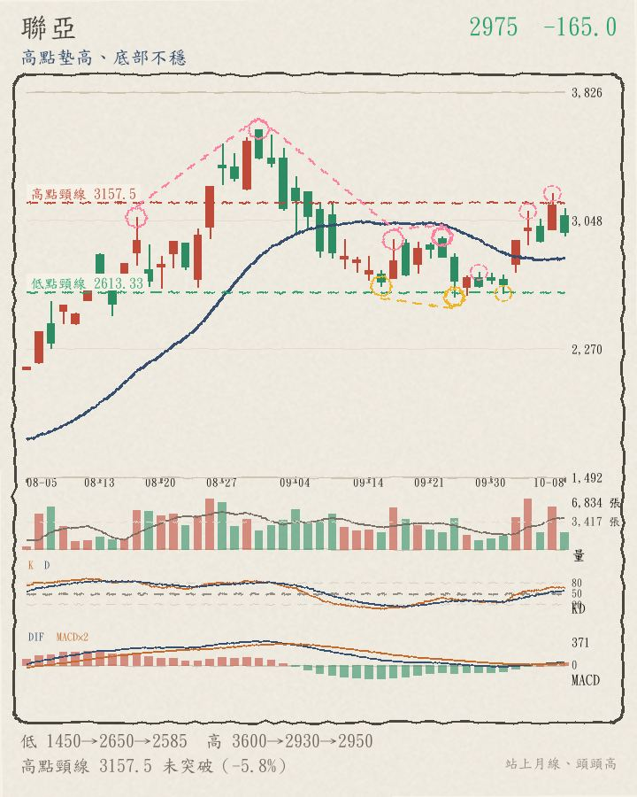
12:31 盤中 2975（-5.25%），比加權指數弱 4.42 個百分點、站上月線 2812.5，離高點頸線 3157.5 還差 5.8%，高點還在墊高（但底部沒同步墊高）。
- 月線位置：現價 2975 在月線 2812.5 之上（+5.8%）；5 日線 2929 也在月線之上（短均在上）；月線向下
- 量能：以已過交易時間推估，今天成交量約是 20 日均量的 0.88 倍（量平），比 20 日均量少一些
- 關鍵價位：高點頸線 3157.5 還沒突破，差 5.8%；前一交易日高點 3210（低於 7.3%）；今天盤中高點 3120（低於 4.6%）；今天盤中低點 2955（高於 0.7%）
- 轉折結構：高點 3600、2930、2950 墊高（頭頭高），但低點 1450、2650、2585 沒有同步墊高；還沒確認的轉折低點 09-23 2585、10-01 2605；還沒確認的轉折高點 10-05 3105、10-07 3210（圖上虛線小圈）
台達電 2308 上市
1965 -25.0（-1.26%）
高點墊高、底部不穩 盤中成交值 64.41 億・全榜第 39 名（上市第 29 名）・相對大盤 -0.43
好條件 4/8：站上月線、月線向上、頭頭高、突破頸線
不好條件 4/8：今日下跌、相對大盤弱、貼近今日低點（1% 內）、跌破昨日低點
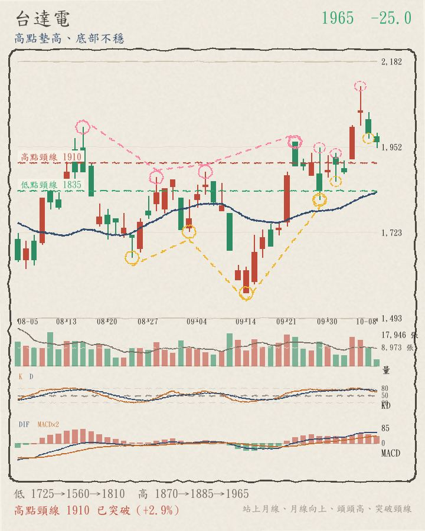
12:31 盤中 1965（-1.26%），比加權指數弱 0.43 個百分點、站上月線 1823，已突破高點頸線 1910，高點還在墊高（但底部沒同步墊高）。
- 月線位置：現價 1965 在月線 1823 之上（+7.8%）；5 日線 1967 也在月線之上（短均在上）；月線向上
- 量能：以已過交易時間推估，今天成交量約是 20 日均量的 0.38 倍（量縮），比 20 日均量少很多
- 關鍵價位：高點頸線 1910 已站上；前一交易日高點 2045（低於 3.9%）；今天盤中高點 1990（低於 1.3%）；今天盤中低點 1950（高於 0.8%）
- 轉折結構：高點 1870、1885、1965 墊高（頭頭高），但低點 1725、1560、1810 沒有同步墊高；還沒確認的轉折低點 10-01 1860、10-07 1975；還沒確認的轉折高點 10-01 1935、10-06 2115（圖上虛線小圈）
力積電 6770 上市
72.4 -0.2（-0.28%）
高點墊高、底部不穩 盤中成交值 63.78 億・全榜第 40 名（上市第 30 名）・相對大盤 +0.55
好條件 3/8：月線向上、頭頭高、相對大盤強
不好條件 4/8：今日下跌、在月線之下、貼近今日低點（1% 內）、跌破昨日低點
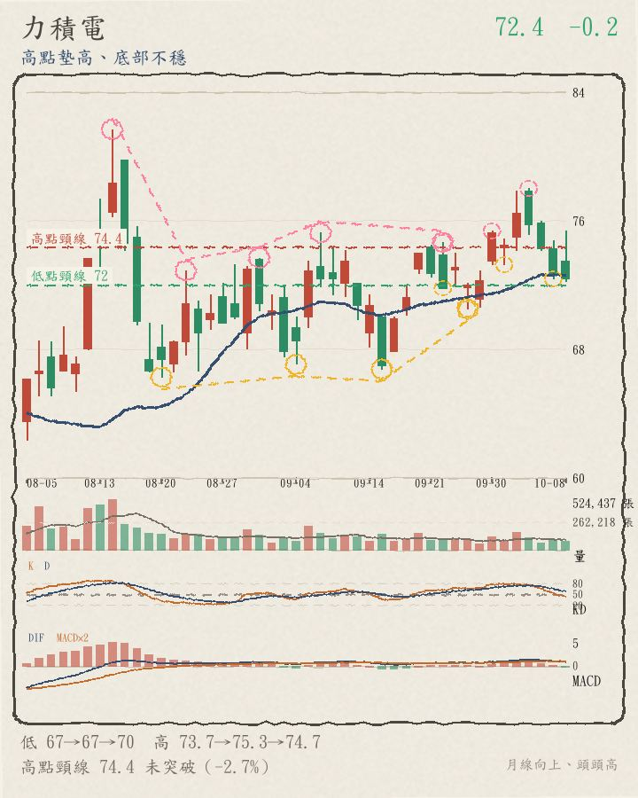
12:31 盤中 72.4（-0.28%），比加權指數強 0.55 個百分點、跌破月線 72.63，離高點頸線 74.4 還差 2.7%，高點還在墊高（但底部沒同步墊高）。
- 月線位置：現價 72.4 在月線 72.63 之下（-0.3%）；5 日線 74.74 也在月線之上（短均在上）；月線向上
- 量能：以已過交易時間推估，今天成交量約是 20 日均量的 0.90 倍（量平），比 20 日均量少一些
- 關鍵價位：高點頸線 74.4 還沒突破，差 2.7%；前一交易日高點 74.8（低於 3.2%）；今天盤中高點 75.4（低於 4.0%）；今天盤中低點 72.2（高於 0.3%）
- 轉折結構：高點 73.7、75.3、74.7 墊高（頭頭高），但低點 67、66.7、70.5 沒有同步墊高；還沒確認的轉折低點 10-01 73.3、10-07 72.4；還沒確認的轉折高點 09-30 75.4、10-05 78.1（圖上虛線小圈）
鴻海 2317 上市
249.5 -2.5（-0.99%）
上升趨勢（底底高＋頭頭高） 盤中成交值 60.75 億・全榜第 41 名（上市第 31 名）・相對大盤 -0.16
好條件 4/8：月線向上、底底高、頭頭高、守住今日高檔（距今日高點 1% 內）
不好條件 4/8：今日下跌、相對大盤弱、在月線之下、跌破昨日低點
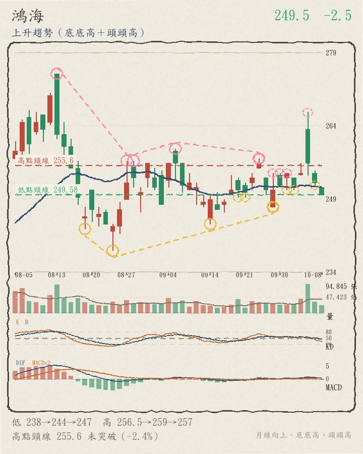
12:31 盤中 249.5（-0.99%），比加權指數弱 0.16 個百分點、跌破月線 251.25，離高點頸線 255.6 還差 2.4%，轉折結構仍是底底高＋頭頭高。
- 月線位置：現價 249.5 在月線 251.25 之下（-0.7%）；5 日線 253.4 也在月線之上（短均在上）；月線向上
- 量能：以已過交易時間推估，今天成交量約是 20 日均量的 0.95 倍（量平），跟 20 日均量差不多
- 關鍵價位：高點頸線 255.6 還沒突破，差 2.4%；前一交易日高點 254.5（低於 2.0%）；今天盤中高點 251（低於 0.6%）；今天盤中低點 249.5（高於 0.0%）
- 轉折結構：低點 238、243.5、247 一路墊高、高點 256.5、259、257 也一路墊高，是底底高＋頭頭高；還沒確認的轉折低點 10-02 250.5、10-07 251.5；還沒確認的轉折高點 10-01 254、10-06 266.5（圖上虛線小圈）
景碩 3189 上市
1070 -30.0（-2.73%）
高點墊高、底部不穩 盤中成交值 57.85 億・全榜第 42 名（上市第 32 名）・相對大盤 -1.90
好條件 3/8：站上月線、月線向上、頭頭高
不好條件 3/8：今日下跌、相對大盤弱、跌破昨日低點
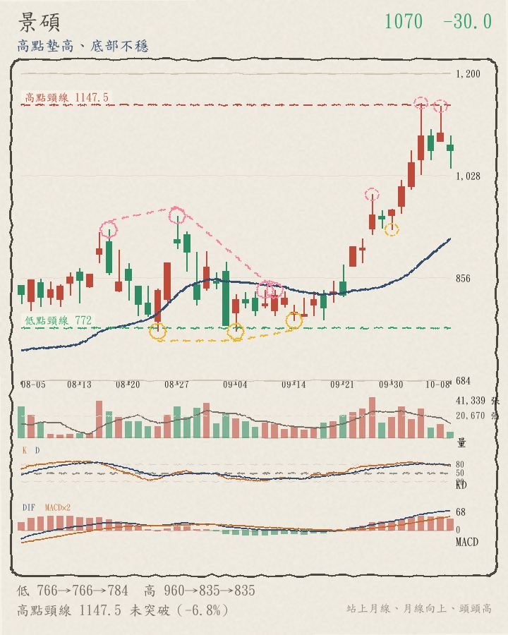
12:31 盤中 1070（-2.73%），比加權指數弱 1.90 個百分點、站上月線 908.25，離高點頸線 1147.5 還差 6.8%，高點還在墊高（但底部沒同步墊高）。
- 月線位置：現價 1070 在月線 908.25 之上（+17.8%）；5 日線 1065 也在月線之上（短均在上）；月線向上
- 量能：以已過交易時間推估，今天成交量約是 20 日均量的 0.38 倍（量縮），比 20 日均量少很多
- 關鍵價位：高點頸線 1147.5 還沒突破，差 6.8%；前一交易日高點 1145（低於 6.6%）；今天盤中高點 1095（低於 2.3%）；今天盤中低點 1040（高於 2.9%）
- 轉折結構：高點 960、835、835 墊高（頭頭高），但低點 766、766、784 沒有同步墊高；還沒確認的轉折低點 09-30 937；還沒確認的轉折高點 10-05 1150、10-07 1145（圖上虛線小圈）
南電 8046 上市
1465 -15.0（-1.01%）
上升趨勢（底底高＋頭頭高） 盤中成交值 57.08 億・全榜第 43 名（上市第 33 名）・相對大盤 -0.18
好條件 4/8：站上月線、月線向上、底底高、頭頭高
不好條件 3/8：今日下跌、相對大盤弱、跌破昨日低點
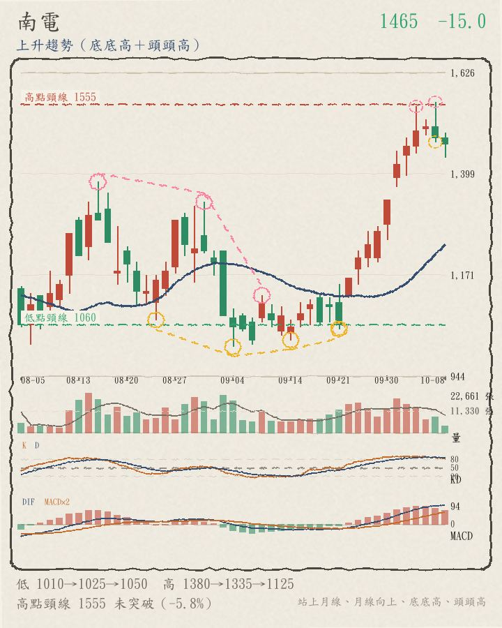
12:31 盤中 1465（-1.01%），比加權指數弱 0.18 個百分點、站上月線 1217，離高點頸線 1555 還差 5.8%，轉折結構仍是底底高＋頭頭高。
- 月線位置：現價 1465 在月線 1217 之上（+20.4%）；5 日線 1472 也在月線之上（短均在上）；月線向上
- 量能：以已過交易時間推估，今天成交量約是 20 日均量的 0.46 倍（量縮），比 20 日均量少很多
- 關鍵價位：高點頸線 1555 還沒突破，差 5.8%；前一交易日高點 1560（低於 6.1%）；今天盤中高點 1490（低於 1.7%）；今天盤中低點 1435（高於 2.1%）
- 轉折結構：低點 1010、1025、1050 一路墊高、高點 1380、1335、1125 也一路墊高，是底底高＋頭頭高；還沒確認的轉折低點 09-21 1050、10-07 1470；還沒確認的轉折高點 10-05 1550、10-07 1560（圖上虛線小圈）
台勝科 3532 上市
511 -2.0（-0.39%）
上升趨勢（底底高＋頭頭高） 盤中成交值 56.37 億・全榜第 44 名（上市第 34 名）・相對大盤 +0.44
好條件 6/8：站上月線、月線向上、底底高、頭頭高、突破頸線、相對大盤強
不好條件 2/8：今日下跌、量增下跌（出貨）
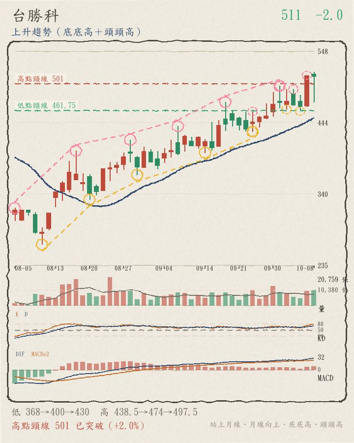
12:31 盤中 511（-0.39%），比加權指數強 0.44 個百分點、站上月線 445.15，已突破高點頸線 501，轉折結構仍是底底高＋頭頭高。
- 月線位置：現價 511 在月線 445.15 之上（+14.8%）；5 日線 479.8 也在月線之上（短均在上）；月線向上
- 量能：以已過交易時間推估，今天成交量約是 20 日均量的 1.83 倍（爆量），比 20 日均量大不少；下跌卻量增，量價背離
- 關鍵價位：高點頸線 501 已站上；前一交易日高點 513（低於 0.4%）；今天盤中高點 518（低於 1.4%）；今天盤中低點 474（高於 7.8%）
- 轉折結構：低點 367.5、400、430.5 一路墊高、高點 438.5、474、497.5 也一路墊高，是底底高＋頭頭高；還沒確認的轉折低點 10-02 463、10-06 460.5；還沒確認的轉折高點 10-05 492.5、10-07 513（圖上虛線小圈）
台化 1326 上市
77.2 +1.4（+1.85%）
高點墊高、底部不穩 盤中成交值 54.25 億・全榜第 45 名（上市第 35 名）・相對大盤 +2.68
好條件 5/8：站上月線、月線向上、頭頭高、相對大盤強、攻擊量（量增＋上漲）
不好條件 0/8：無
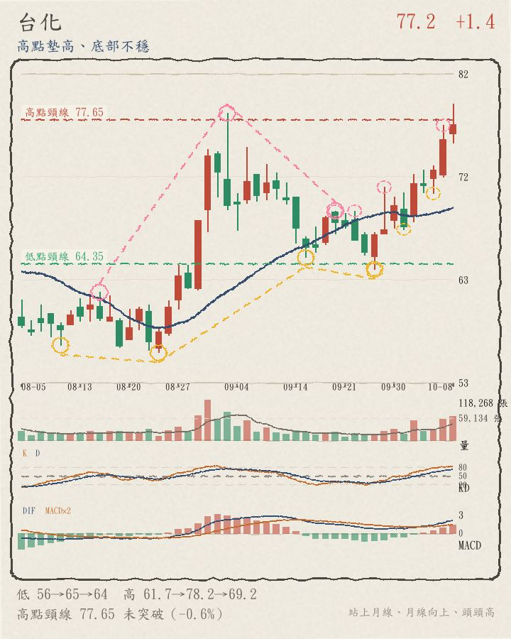
12:31 盤中 77.2（+1.85%），比加權指數強 2.68 個百分點、站上月線 69.175，離高點頸線 77.65 還差 0.6%，高點還在墊高（但底部沒同步墊高）。
- 月線位置：現價 77.2 在月線 69.175 之上（+11.6%）；5 日線 71.96 也在月線之上（短均在上）；月線向上
- 量能：以已過交易時間推估，今天成交量約是 20 日均量的 3.42 倍（爆量），比 20 日均量大不少；上漲又量增，量價配合
- 關鍵價位：高點頸線 77.65 還沒突破，差 0.6%；前一交易日高點 77.1（高於 0.1%）；今天盤中高點 79.1（低於 2.4%）；今天盤中低點 75.5（高於 2.3%）
- 轉折結構：高點 61.7、78.2、69.2 墊高（頭頭高），但低點 56.1、64.9、63.8 沒有同步墊高；還沒確認的轉折低點 10-01 67.5、10-06 70.8；還沒確認的轉折高點 09-29 71.4、10-07 77.1（圖上虛線小圈）
矽格 6257 上市
278 +0.0（+0.00%）
高點墊高、底部不穩 盤中成交值 53.52 億・全榜第 46 名（上市第 36 名）・相對大盤 +0.83
好條件 5/8：站上月線、月線向上、頭頭高、突破頸線、相對大盤強
不好條件 0/8：無
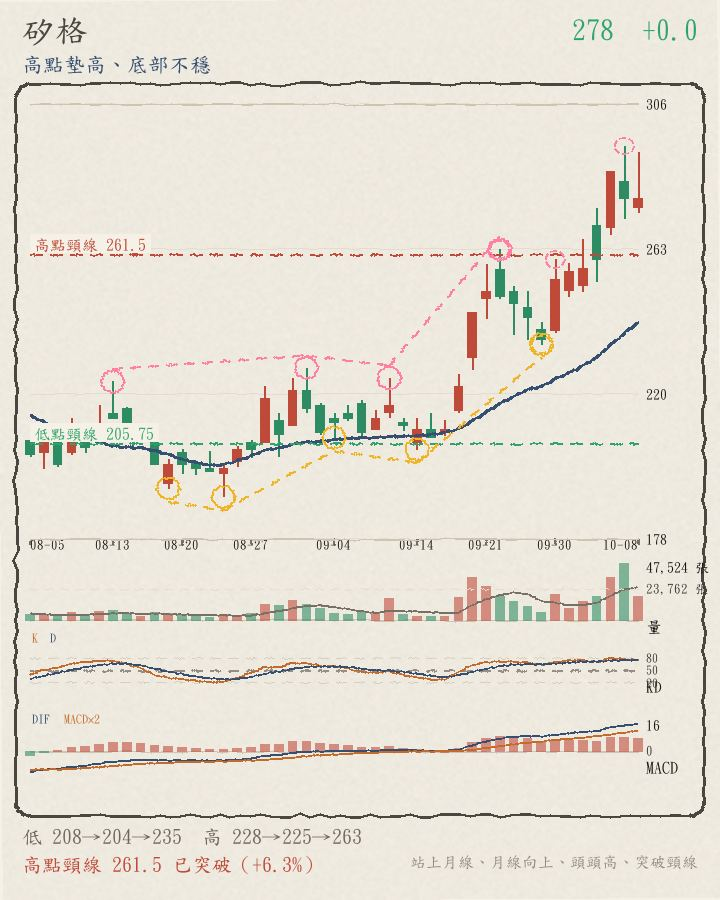
12:31 盤中 278（+0.00%），比加權指數強 0.83 個百分點、站上月線 238.15，已突破高點頸線 261.5，高點還在墊高（但底部沒同步墊高）。
- 月線位置：現價 278 在月線 238.15 之上（+16.7%）；5 日線 267.6 也在月線之上（短均在上）；月線向上
- 量能：以已過交易時間推估，今天成交量約是 20 日均量的 1.72 倍（爆量），比 20 日均量大不少
- 關鍵價位：高點頸線 261.5 已站上；前一交易日高點 293.5（低於 5.3%）；今天盤中高點 291.5（低於 4.6%）；今天盤中低點 274（高於 1.5%）
- 轉折結構：高點 228、225、263 墊高（頭頭高），但低點 207.5、204、235 沒有同步墊高；還沒確認的轉折低點 09-29 235；還沒確認的轉折高點 09-30 260、10-07 293.5（圖上虛線小圈）
光聖 6442 上市
1765 -50.0（-2.75%）
區間或轉弱 盤中成交值 48.66 億・全榜第 47 名（上市第 37 名）・相對大盤 -1.92
好條件 2/8：站上月線、突破頸線
不好條件 4/8：今日下跌、相對大盤弱、量增下跌（出貨）、月線下彎
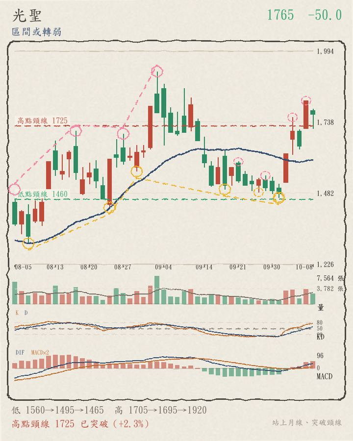
12:31 盤中 1765（-2.75%），比加權指數弱 1.92 個百分點、站上月線 1598.5，已突破高點頸線 1725，轉折還沒走出明顯方向。
- 月線位置：現價 1765 在月線 1598.5 之上（+10.4%）；5 日線 1655 也在月線之上（短均在上）；月線向下
- 量能：以已過交易時間推估，今天成交量約是 20 日均量的 1.76 倍（爆量），比 20 日均量大不少；下跌卻量增，量價背離
- 關鍵價位：高點頸線 1725 已站上；前一交易日高點 1815（低於 2.8%）；今天盤中高點 1785（低於 1.1%）；今天盤中低點 1715（高於 2.9%）
- 轉折結構：低點 1560、1495、1465 與高點 1705、1695、1920 都沒有明顯遞增，屬於區間震盪或轉弱；還沒確認的轉折低點 09-24 1485、10-01 1465；還沒確認的轉折高點 10-05 1755、10-07 1815（圖上虛線小圈）
營邦 3693 上櫃
730 +12.0（+1.67%）
上升趨勢（底底高＋頭頭高） 盤中成交值 48.1 億・全榜第 48 名（上櫃第 11 名）・相對大盤 +2.50
好條件 6/8：站上月線、月線向上、底底高、頭頭高、相對大盤強、攻擊量（量增＋上漲）
不好條件 0/8：無
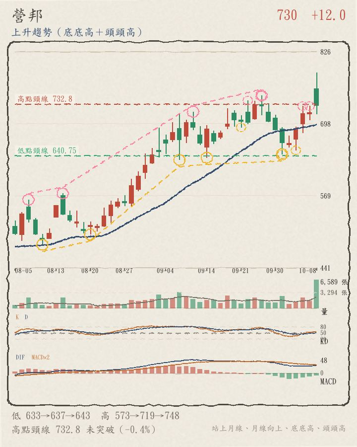
12:31 盤中 730（+1.67%），比加權指數強 2.50 個百分點、站上月線 693.05，離高點頸線 732.8 還差 0.4%，轉折結構仍是底底高＋頭頭高。
- 月線位置：現價 730 在月線 693.05 之上（+5.3%）；5 日線 690 也在月線之下（短均在下）；月線向上
- 量能：以已過交易時間推估，今天成交量約是 20 日均量的 4.38 倍（爆量），比 20 日均量大不少；上漲又量增，量價配合
- 關鍵價位：高點頸線 732.8 還沒突破，差 0.4%；前一交易日高點 729（高於 0.1%）；今天盤中高點 789（低於 7.5%）；今天盤中低點 715（高於 2.1%）
- 轉折結構：低點 633、637、643 一路墊高、高點 573、719、748 也一路墊高，是底底高＋頭頭高；還沒確認的轉折低點 10-01 643、10-05 650；還沒確認的轉折高點 10-06 729、10-07 729（圖上虛線小圈）
華通 2313 上市
248.5 +2.5（+1.02%）
上升趨勢（底底高＋頭頭高） 盤中成交值 47.77 億・全榜第 49 名（上市第 38 名）・相對大盤 +1.85
好條件 5/8：站上月線、底底高、頭頭高、相對大盤強、守住今日高檔（距今日高點 1% 內）
不好條件 1/8：月線下彎
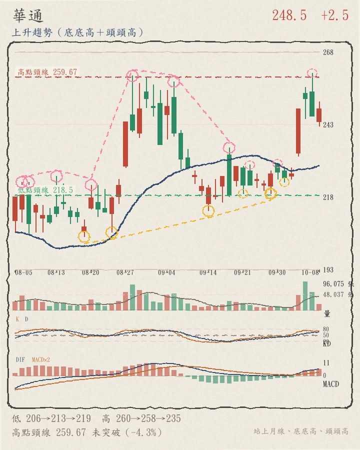
12:31 盤中 248.5（+1.02%），比加權指數強 1.85 個百分點、站上月線 227.875，離高點頸線 259.67 還差 4.3%，轉折結構仍是底底高＋頭頭高。
- 月線位置：現價 248.5 在月線 227.875 之上（+9.1%）；5 日線 239.4 也在月線之上（短均在上）；月線向下
- 量能：以已過交易時間推估，今天成交量約是 20 日均量的 1.04 倍（量平），跟 20 日均量差不多
- 關鍵價位：高點頸線 259.67 還沒突破，差 4.3%；前一交易日高點 261（低於 4.8%）；今天盤中高點 251（低於 1.0%）；今天盤中低點 242.5（高於 2.5%）
- 轉折結構：低點 205.5、213、219 一路墊高、高點 260、258、235 也一路墊高，是底底高＋頭頭高；還沒確認的轉折低點 09-29 219、10-01 223；還沒確認的轉折高點 09-30 229.5、10-07 261（圖上虛線小圈）
穎崴 6515 上市
5620 +100.0（+1.81%）
高點墊高、底部不穩 盤中成交值 46.59 億・全榜第 50 名（上市第 39 名）・相對大盤 +2.64
好條件 3/8：頭頭高、相對大盤強、攻擊量（量增＋上漲）
不好條件 2/8：在月線之下、月線下彎
12:31 盤中 5620（+1.81%），比加權指數強 2.64 個百分點、跌破月線 6272.25，離高點頸線 6177.5 還差 9.0%，高點還在墊高（但底部沒同步墊高）。
- 月線位置：現價 5620 在月線 6272.25 之下（-10.4%）；5 日線 5939 也在月線之下（短均在下）；月線向下
- 量能：以已過交易時間推估，今天成交量約是 20 日均量的 1.92 倍（爆量），比 20 日均量大不少；上漲又量增，量價配合
- 關鍵價位：高點頸線 6177.5 還沒突破，差 9.0%；前一交易日高點 6010（低於 6.5%）；今天盤中高點 5680（低於 1.1%）；今天盤中低點 5445（高於 3.2%）
- 轉折結構：高點 6700、7370、8260 墊高（頭頭高），但低點 5955、5890、5530 沒有同步墊高；還沒確認的轉折低點 09-29 5650、10-07 5520；還沒確認的轉折高點 09-23 6070、10-06 6285（圖上虛線小圈）
宏捷科 8086 上櫃
154 +14.0（+10.00%）
高點墊高、底部不穩 盤中成交值 46.23 億・全榜第 51 名（上櫃第 12 名）・相對大盤 +10.83
好條件 6/8：站上月線、月線向上、頭頭高、突破頸線、相對大盤強、攻擊量（量增＋上漲）
不好條件 0/8：無
12:31 盤中 154（+10.00%），比加權指數強 10.83 個百分點、站上月線 113.6，已突破高點頸線 112.75，高點還在墊高（但底部沒同步墊高）。
- 月線位置：現價 154 在月線 113.6 之上（+35.6%）；5 日線 126.3 也在月線之上（短均在上）；月線向上
- 量能：以已過交易時間推估，今天成交量約是 20 日均量的 10.40 倍（爆量），比 20 日均量大不少；上漲又量增，量價配合
- 關鍵價位：高點頸線 112.75 已站上；前一交易日高點 140（高於 10.0%）；今天盤中高點 154（高於 0.0%）；今天盤中低點 140（高於 10.0%）
- 轉折結構：高點 126、114.5、112.5 墊高（頭頭高），但低點 109、103.5、107.5 沒有同步墊高；還沒確認的轉折低點 09-18 107.5、09-24 107.5；還沒確認的轉折高點 10-05 132、10-07 140（圖上虛線小圈）
台表科 6278 上市
251 +0.5（+0.20%）
上升趨勢（底底高＋頭頭高） 盤中成交值 44.96 億・全榜第 52 名（上市第 40 名）・相對大盤 +1.03
好條件 7/8：站上月線、月線向上、底底高、頭頭高、突破頸線、相對大盤強、攻擊量（量增＋上漲）
不好條件 0/8：無
12:31 盤中 251（+0.20%），比加權指數強 1.03 個百分點、站上月線 204.5，已突破高點頸線 214，轉折結構仍是底底高＋頭頭高。
- 月線位置：現價 251 在月線 204.5 之上（+22.7%）；5 日線 227.6 也在月線之上（短均在上）；月線向上
- 量能：以已過交易時間推估，今天成交量約是 20 日均量的 3.58 倍（爆量），比 20 日均量大不少；上漲又量增，量價配合
- 關鍵價位：高點頸線 214 已站上；前一交易日高點 250.5（高於 0.2%）；今天盤中高點 256（低於 2.0%）；今天盤中低點 240.5（高於 4.4%）
- 轉折結構：低點 168、172、179.5 一路墊高、高點 181.5、210、223 也一路墊高，是底底高＋頭頭高；還沒確認的轉折低點 09-24 204.5、10-05 211.5；還沒確認的轉折高點 09-30 223、10-07 250.5（圖上虛線小圈）
精測 6510 上櫃
3320 +300.0（+9.93%）
區間或轉弱 盤中成交值 43.69 億・全榜第 53 名（上櫃第 13 名）・相對大盤 +10.76
好條件 4/8：站上月線、突破頸線、相對大盤強、攻擊量（量增＋上漲）
不好條件 1/8：月線下彎
12:31 盤中 3320（+9.93%），比加權指數強 10.76 個百分點、站上月線 3319.25，已突破高點頸線 3140，轉折還沒走出明顯方向。
- 月線位置：現價 3320 在月線 3319.25 之上（+0.0%）；5 日線 3050 也在月線之下（短均在下）；月線向下
- 量能：以已過交易時間推估，今天成交量約是 20 日均量的 1.69 倍（爆量），比 20 日均量大不少；上漲又量增，量價配合
- 關鍵價位：高點頸線 3140 已站上；前一交易日高點 3100（高於 7.1%）；今天盤中高點 3320（高於 0.0%）；今天盤中低點 3000（高於 10.7%）
- 轉折結構：低點 2570、3165、2960 與高點 3100、3935、3775 都沒有明顯遞增，屬於區間震盪或轉弱；還沒確認的轉折低點 10-01 2960、10-07 3015；還沒確認的轉折高點 09-22 3775、10-05 3180（圖上虛線小圈）
廣達 2382 上市
325.5 -9.5（-2.84%）
區間或轉弱 盤中成交值 39.56 億・全榜第 54 名（上市第 41 名）・相對大盤 -2.01
好條件 1/8：守住今日高檔（距今日高點 1% 內）
不好條件 6/8：跌破前低、今日下跌、相對大盤弱、在月線之下、跌破昨日低點、月線下彎
12:31 盤中 325.5（-2.84%），比加權指數弱 2.01 個百分點、跌破月線 336.875，離高點頸線 343.75 還差 5.3%，轉折還沒走出明顯方向。
- 月線位置：現價 325.5 在月線 336.875 之下（-3.4%）；5 日線 333.1 也在月線之下（短均在下）；月線向下
- 量能：以已過交易時間推估，今天成交量約是 20 日均量的 1.14 倍（量增），比 20 日均量大一些；下跌卻量增，量價背離
- 關鍵價位：已跌破前一個轉折低點；高點頸線 343.75 還在現價上方 5.3%；前一交易日高點 337.5（低於 3.6%）；今天盤中高點 328.5（低於 0.9%）；今天盤中低點 321（高於 1.4%）
- 轉折結構：低點 328.5、330、330 與高點 339、351.5、349 都沒有明顯遞增，屬於區間震盪或轉弱；還沒確認的轉折低點 10-02 330、10-05 330；還沒確認的轉折高點 10-05 336、10-07 337.5（圖上虛線小圈）
尖點 8021 上市
556 +0.0（+0.00%）
高點墊高、底部不穩 盤中成交值 38.36 億・全榜第 55 名（上市第 42 名）・相對大盤 +0.83
好條件 5/8：站上月線、月線向上、頭頭高、突破頸線、相對大盤強
不好條件 0/8：無
12:31 盤中 556（+0.00%），比加權指數強 0.83 個百分點、站上月線 477.807，已突破高點頸線 473.9，高點還在墊高（但底部沒同步墊高）。
- 月線位置：現價 556 在月線 477.807 之上（+16.4%）；5 日線 544.49 也在月線之上（短均在上）；月線向上
- 量能：以已過交易時間推估，今天成交量約是 20 日均量的 1.54 倍（爆量），比 20 日均量大不少
- 關鍵價位：高點頸線 473.9 已站上；前一交易日高點 574（低於 3.1%）；今天盤中高點 568（低於 2.1%）；今天盤中低點 544（高於 2.2%）
- 轉折結構：高點 462、481、481 墊高（頭頭高），但低點 373.5、413、410.5 沒有同步墊高；還沒確認的轉折低點 09-29 466.931、10-07 549；還沒確認的轉折高點 09-24 480.5、10-06 584（圖上虛線小圈）
萬潤 6187 上櫃
1510 -25.0（-1.63%）
高點墊高、底部不穩 盤中成交值 38.13 億・全榜第 56 名（上櫃第 14 名）・相對大盤 -0.80
好條件 4/8：站上月線、月線向上、頭頭高、突破頸線
不好條件 3/8：今日下跌、相對大盤弱、量增下跌（出貨）
12:31 盤中 1510（-1.63%），比加權指數弱 0.80 個百分點、站上月線 1301.25，已突破高點頸線 1436.67，高點還在墊高（但底部沒同步墊高）。
- 月線位置：現價 1510 在月線 1301.25 之上（+16.0%）；5 日線 1438 也在月線之上（短均在上）；月線向上
- 量能：以已過交易時間推估，今天成交量約是 20 日均量的 1.41 倍（量增），比 20 日均量大不少；下跌卻量增，量價背離
- 關鍵價位：高點頸線 1436.67 已站上；前一交易日高點 1570（低於 3.8%）；今天盤中高點 1595（低於 5.3%）；今天盤中低點 1490（高於 1.3%）
- 轉折結構：高點 1455、1435、1270 墊高（頭頭高），但低點 1185、1180、1180 沒有同步墊高；還沒確認的轉折低點 09-24 1180、10-01 1260；還沒確認的轉折高點 09-30 1420、10-06 1590（圖上虛線小圈）
中美晶 5483 上櫃
216 -8.0（-3.57%）
高點墊高、底部不穩 盤中成交值 38.12 億・全榜第 57 名（上櫃第 15 名）・相對大盤 -2.74
好條件 3/8：站上月線、月線向上、頭頭高
不好條件 2/8：今日下跌、相對大盤弱
12:31 盤中 216（-3.57%），比加權指數弱 2.74 個百分點、站上月線 192.95，離高點頸線 228.25 還差 5.4%，高點還在墊高（但底部沒同步墊高）。
- 月線位置：現價 216 在月線 192.95 之上（+11.9%）；5 日線 217.3 也在月線之上（短均在上）；月線向上
- 量能：以已過交易時間推估，今天成交量約是 20 日均量的 1.10 倍（量增），比 20 日均量大一些；下跌卻量增，量價背離
- 關鍵價位：高點頸線 228.25 還沒突破，差 5.4%；前一交易日高點 227（低於 4.8%）；今天盤中高點 221（低於 2.3%）；今天盤中低點 208.5（高於 3.6%）
- 轉折結構：高點 187.5、202、229.5 墊高（頭頭高），但低點 173、170、181.5 沒有同步墊高；還沒確認的轉折低點 09-24 181.5、10-06 211；還沒確認的轉折高點 10-02 229.5、10-07 227（圖上虛線小圈）
台塑化 6505 上市
111 +4.0（+3.74%）
上升趨勢（底底高＋頭頭高） 盤中成交值 37.81 億・全榜第 58 名（上市第 43 名）・相對大盤 +4.57
好條件 7/8：站上月線、月線向上、底底高、頭頭高、突破頸線、相對大盤強、攻擊量（量增＋上漲）
不好條件 0/8：無
12:31 盤中 111（+3.74%），比加權指數強 4.57 個百分點、站上月線 89.945，已突破高點頸線 90.2，轉折結構仍是底底高＋頭頭高。
- 月線位置：現價 111 在月線 89.945 之上（+23.4%）；5 日線 100.26 也在月線之上（短均在上）；月線向上
- 量能：以已過交易時間推估，今天成交量約是 20 日均量的 1.61 倍（爆量），比 20 日均量大不少；上漲又量增，量價配合
- 關鍵價位：高點頸線 90.2 已站上；前一交易日高點 110（高於 0.9%）；今天盤中高點 114（低於 2.6%）；今天盤中低點 105.5（高於 5.2%）
- 轉折結構：低點 65.4、68.6、80 一路墊高、高點 76.5、90.6、89.8 也一路墊高，是底底高＋頭頭高；還沒確認的轉折低點 10-01 92.8、10-06 97.7；還沒確認的轉折高點 10-02 103、10-07 110（圖上虛線小圈）
精材 3374 上櫃
499 +2.0（+0.40%）
上升趨勢（底底高＋頭頭高） 盤中成交值 36.86 億・全榜第 59 名（上櫃第 16 名）・相對大盤 +1.23
好條件 6/8：站上月線、月線向上、底底高、頭頭高、突破頸線、相對大盤強
不好條件 0/8：無
12:31 盤中 499（+0.40%），比加權指數強 1.23 個百分點、站上月線 460.375，已突破高點頸線 491.5，轉折結構仍是底底高＋頭頭高。
- 月線位置：現價 499 在月線 460.375 之上（+8.4%）；5 日線 481.3 也在月線之上（短均在上）；月線向上
- 量能：以已過交易時間推估，今天成交量約是 20 日均量的 1.04 倍（量平），跟 20 日均量差不多
- 關鍵價位：高點頸線 491.5 已站上；前一交易日高點 499.5（低於 0.1%）；今天盤中高點 512（低於 2.5%）；今天盤中低點 481.5（高於 3.6%）
- 轉折結構：低點 289、407、436.5 一路墊高、高點 431、496、487 也一路墊高，是底底高＋頭頭高；還沒確認的轉折低點 10-01 450、10-07 475.5；還沒確認的轉折高點 09-30 462、10-06 530（圖上虛線小圈）
富世達 6805 上市
2390 -65.0（-2.65%）
區間或轉弱 盤中成交值 35.44 億・全榜第 60 名（上市第 44 名）・相對大盤 -1.82
好條件 2/8：站上月線、月線向上
不好條件 3/8：今日下跌、相對大盤弱、量增下跌（出貨）
12:31 盤中 2390（-2.65%），比加權指數弱 1.82 個百分點、站上月線 2322.25，離高點頸線 2485 還差 3.8%，轉折還沒走出明顯方向。
- 月線位置：現價 2390 在月線 2322.25 之上（+2.9%）；5 日線 2404 也在月線之上（短均在上）；月線向上
- 量能：以已過交易時間推估，今天成交量約是 20 日均量的 1.28 倍（量增），比 20 日均量大不少；下跌卻量增，量價背離
- 關鍵價位：高點頸線 2485 還沒突破，差 3.8%；前一交易日高點 2510（低於 4.8%）；今天盤中高點 2425（低於 1.4%）；今天盤中低點 2310（高於 3.5%）
- 轉折結構：低點 2010、2010、2300 與高點 2435、2325、2750 都沒有明顯遞增，屬於區間震盪或轉弱；還沒確認的轉折低點 09-29 2420、10-02 2300；還沒確認的轉折高點 10-05 2510、10-07 2510（圖上虛線小圈）
力成 6239 上市
307.5 +0.0（+0.00%）
高點墊高、底部不穩 盤中成交值 34.51 億・全榜第 61 名（上市第 45 名）・相對大盤 +0.83
好條件 5/8：站上月線、月線向上、頭頭高、相對大盤強、守住今日高檔（距今日高點 1% 內）
不好條件 0/8：無
12:31 盤中 307.5（+0.00%），比加權指數強 0.83 個百分點、站上月線 286.5，離高點頸線 314.5 還差 2.2%，高點還在墊高（但底部沒同步墊高）。
- 月線位置：現價 307.5 在月線 286.5 之上（+7.3%）；5 日線 303.2 也在月線之上（短均在上）；月線向上
- 量能：以已過交易時間推估，今天成交量約是 20 日均量的 1.02 倍（量平），跟 20 日均量差不多
- 關鍵價位：高點頸線 314.5 還沒突破，差 2.2%；前一交易日高點 313（低於 1.8%）；今天盤中高點 308.5（低於 0.3%）；今天盤中低點 296（高於 3.9%）
- 轉折結構：高點 290.5、302、316 墊高（頭頭高），但低點 272.5、262、279.5 沒有同步墊高；還沒確認的轉折低點 09-29 279.5；還沒確認的轉折高點 10-02 316、10-07 313（圖上虛線小圈）
嘉澤 3533 上市
1915 +90.0（+4.93%）
高點墊高、底部不穩 盤中成交值 33.86 億・全榜第 62 名（上市第 46 名）・相對大盤 +5.76
好條件 6/8：站上月線、月線向上、頭頭高、突破頸線、相對大盤強、攻擊量（量增＋上漲）
不好條件 0/8：無
12:31 盤中 1915（+4.93%），比加權指數強 5.76 個百分點、站上月線 1681.5，已突破高點頸線 1895，高點還在墊高（但底部沒同步墊高）。
- 月線位置：現價 1915 在月線 1681.5 之上（+13.9%）；5 日線 1855 也在月線之上（短均在上）；月線向上
- 量能：以已過交易時間推估，今天成交量約是 20 日均量的 1.92 倍（爆量），比 20 日均量大不少；上漲又量增，量價配合
- 關鍵價位：高點頸線 1895 已站上；前一交易日高點 1895（高於 1.1%）；今天盤中高點 1935（低於 1.0%）；今天盤中低點 1820（高於 5.2%）
- 轉折結構：高點 2160、2050、1770 墊高（頭頭高），但低點 1565、1540、1495 沒有同步墊高；還沒確認的轉折低點 09-24 1660、10-07 1825；還沒確認的轉折高點 10-01 1865、10-06 1925（圖上虛線小圈）
南茂 8150 上市
126 -2.5（-1.95%）
高點墊高、底部不穩 盤中成交值 33.7 億・全榜第 63 名（上市第 47 名）・相對大盤 -1.12
好條件 4/8：站上月線、月線向上、頭頭高、突破頸線
不好條件 2/8：今日下跌、相對大盤弱
12:31 盤中 126（-1.95%），比加權指數弱 1.12 個百分點、站上月線 103.36，已突破高點頸線 97.03，高點還在墊高（但底部沒同步墊高）。
- 月線位置：現價 126 在月線 103.36 之上（+21.9%）；5 日線 124.5 也在月線之上（短均在上）；月線向上
- 量能：以已過交易時間推估，今天成交量約是 20 日均量的 0.65 倍（量縮），比 20 日均量少很多
- 關鍵價位：高點頸線 97.03 已站上；前一交易日高點 129（低於 2.3%）；今天盤中高點 129.5（低於 2.7%）；今天盤中低點 124（高於 1.6%）
- 轉折結構：高點 96.3、95.4、116 墊高（頭頭高），但低點 86.6、87.9、84.3 沒有同步墊高；還沒確認的轉折低點 09-29 104.5、10-06 123；還沒確認的轉折高點 09-23 116、10-05 133（圖上虛線小圈）
台亞 2340 上市
52.9 +4.8（+9.87%）
高點墊高、底部不穩 盤中成交值 33.64 億・全榜第 64 名（上市第 48 名）・相對大盤 +10.70
好條件 6/8：站上月線、月線向上、頭頭高、突破頸線、相對大盤強、攻擊量（量增＋上漲）
不好條件 0/8：無
12:31 盤中 52.9（+9.87%），比加權指數強 10.70 個百分點、站上月線 37.137，已突破高點頸線 34.75，高點還在墊高（但底部沒同步墊高）。
- 月線位置：現價 52.9 在月線 37.137 之上（+42.5%）；5 日線 47.07 也在月線之上（短均在上）；月線向上
- 量能：以已過交易時間推估，今天成交量約是 20 日均量的 6.73 倍（爆量），比 20 日均量大不少；上漲又量增，量價配合
- 關鍵價位：高點頸線 34.75 已站上；前一交易日高點 49（高於 8.0%）；今天盤中高點 52.9（高於 0.0%）；今天盤中低點 47.8（高於 10.7%）
- 轉折結構：高點 32.7、35.7、35.3 墊高（頭頭高），但低點 30.5、29.25、30.7 沒有同步墊高；還沒確認的轉折低點 09-24 34.15、10-07 43.5；還沒確認的轉折高點 09-23 37.3、10-06 50.4（圖上虛線小圈）
群聯 8299 上櫃
2055 -5.0（-0.24%）
區間或轉弱 盤中成交值 33.06 億・全榜第 65 名（上櫃第 17 名）・相對大盤 +0.59
好條件 2/8：月線向上、相對大盤強
不好條件 5/8：跌破前低、今日下跌、在月線之下、貼近今日低點（1% 內）、跌破昨日低點
12:31 盤中 2055（-0.24%），比加權指數強 0.59 個百分點、跌破月線 2078.5，離高點頸線 2196.25 還差 6.4%，轉折還沒走出明顯方向。
- 月線位置：現價 2055 在月線 2078.5 之下（-1.1%）；5 日線 2091 也在月線之上（短均在上）；月線向上
- 量能：以已過交易時間推估，今天成交量約是 20 日均量的 0.66 倍（量縮），比 20 日均量少很多
- 關鍵價位：已跌破前一個轉折低點；高點頸線 2196.25 還在現價上方 6.4%；前一交易日高點 2110（低於 2.6%）；今天盤中高點 2095（低於 1.9%）；今天盤中低點 2050（高於 0.2%）
- 轉折結構：低點 1970、1900、2080 與高點 2195、2160、2350 都沒有明顯遞增，屬於區間震盪或轉弱；還沒確認的轉折低點 10-05 2055、10-07 2060；還沒確認的轉折高點 09-23 2350、09-30 2215（圖上虛線小圈）
旺宏 2337 上市
116.5 -1.5（-1.27%）
區間或轉弱 盤中成交值 32.93 億・全榜第 66 名（上市第 49 名）・相對大盤 -0.44
好條件 0/8：無
不好條件 6/8：今日下跌、相對大盤弱、在月線之下、量增下跌（出貨）、跌破昨日低點、月線下彎
12:31 盤中 116.5（-1.27%），比加權指數弱 0.44 個百分點、跌破月線 119.9，離高點頸線 123.3 還差 5.5%，轉折還沒走出明顯方向。
- 月線位置：現價 116.5 在月線 119.9 之下（-2.8%）；5 日線 120.4 也在月線之上（短均在上）；月線向下
- 量能：以已過交易時間推估，今天成交量約是 20 日均量的 1.41 倍（量增），比 20 日均量大不少；下跌卻量增，量價背離
- 關鍵價位：高點頸線 123.3 還沒突破，差 5.5%；前一交易日高點 120.5（低於 3.3%）；今天盤中高點 121.5（低於 4.1%）；今天盤中低點 116.5（高於 0.0%）
- 轉折結構：低點 116.5、114、114.5 與高點 130、124.5、123 都沒有明顯遞增，屬於區間震盪或轉弱；還沒確認的轉折低點 10-05 119.5、10-07 117；還沒確認的轉折高點 10-02 123、10-06 122.5（圖上虛線小圈）
量增
↑ 回上方清單
緯穎 6669 上市
2255 +15.0（+0.67%）
高點墊高、底部不穩 盤中成交值 32.34 億・全榜第 67 名（上市第 50 名）・相對大盤 +1.50
好條件 4/8：站上月線、頭頭高、相對大盤強、守住今日高檔（距今日高點 1% 內）
不好條件 1/8：月線下彎
12:31 盤中 2255（+0.67%），比加權指數強 1.50 個百分點、站上月線 2194.75，離高點頸線 2297.31 還差 1.8%，高點還在墊高（但底部沒同步墊高）。
- 月線位置：現價 2255 在月線 2194.75 之上（+2.8%）；5 日線 2175 也在月線之下（短均在下）；月線向下
- 量能：以已過交易時間推估，今天成交量約是 20 日均量的 0.57 倍（量縮），比 20 日均量少很多；上漲但量縮，量價背離
- 關鍵價位：高點頸線 2297.31 還沒突破，差 1.8%；前一交易日高點 2310（低於 2.4%）；今天盤中高點 2270（低於 0.7%）；今天盤中低點 2200（高於 2.5%）
- 轉折結構：高點 2145.64、2259.63、2875 墊高（頭頭高），但低點 2085、2075、2080 沒有同步墊高；還沒確認的轉折低點 09-24 2075、10-02 2080；還沒確認的轉折高點 09-30 2145、10-06 2335（圖上虛線小圈）
金山電 8042 上櫃
138.5 +12.5（+9.92%）
上升趨勢（底底高＋頭頭高） 盤中成交值 26.77 億・全榜第 68 名（上櫃第 18 名）・相對大盤 +10.75
好條件 7/8：站上月線、月線向上、底底高、頭頭高、突破頸線、相對大盤強、攻擊量（量增＋上漲）
不好條件 0/8：無
12:31 盤中 138.5（+9.92%），比加權指數強 10.75 個百分點、站上月線 114.341，已突破高點頸線 126.17，轉折結構仍是底底高＋頭頭高。
- 月線位置：現價 138.5 在月線 114.341 之上（+21.1%）；5 日線 120.1 也在月線之上（短均在上）；月線向上
- 量能：以已過交易時間推估，今天成交量約是 20 日均量的 4.48 倍（爆量），比 20 日均量大不少；上漲又量增，量價配合
- 關鍵價位：高點頸線 126.17 已站上；前一交易日高點 128.5（高於 7.8%）；今天盤中高點 138.5（高於 0.0%）；今天盤中低點 121.5（高於 14.0%）
- 轉折結構：低點 100、107.5、110 一路墊高、高點 115、123.5、117.177 也一路墊高，是底底高＋頭頭高；還沒確認的轉折低點 09-24 110、10-06 117；還沒確認的轉折高點 10-05 126.5、10-07 128.5（圖上虛線小圈）
德宏 5475 上櫃
197 +4.0（+2.07%）
高點墊高、底部不穩 盤中成交值 26.62 億・全榜第 69 名（上櫃第 19 名）・相對大盤 +2.90
好條件 4/8：站上月線、頭頭高、相對大盤強、攻擊量（量增＋上漲）
不好條件 1/8：月線下彎
12:31 盤中 197（+2.07%），比加權指數強 2.90 個百分點、站上月線 180.775，離高點頸線 200.75 還差 1.9%，高點還在墊高（但底部沒同步墊高）。
- 月線位置：現價 197 在月線 180.775 之上（+9.0%）；5 日線 183.3 也在月線之上（短均在上）；月線向下
- 量能：以已過交易時間推估，今天成交量約是 20 日均量的 3.84 倍（爆量），比 20 日均量大不少；上漲又量增，量價配合
- 關鍵價位：高點頸線 200.75 還沒突破，差 1.9%；前一交易日高點 198（低於 0.5%）；今天盤中高點 203（低於 3.0%）；今天盤中低點 192（高於 2.6%）
- 轉折結構：高點 215、203.5、195 墊高（頭頭高），但低點 156、176、168 沒有同步墊高；還沒確認的轉折低點 10-01 176、10-06 180；還沒確認的轉折高點 10-05 191.5、10-07 198（圖上虛線小圈）
聖暉* 5536 上櫃
1040 -5.0（-0.48%）
高點墊高、底部不穩 盤中成交值 24.97 億・全榜第 70 名（上櫃第 20 名）・相對大盤 +0.35
好條件 5/8：站上月線、月線向上、頭頭高、突破頸線、相對大盤強
不好條件 2/8：今日下跌、量增下跌（出貨）
12:31 盤中 1040（-0.48%），比加權指數強 0.35 個百分點、站上月線 896.4，已突破高點頸線 897，高點還在墊高（但底部沒同步墊高）。
- 月線位置：現價 1040 在月線 896.4 之上（+16.0%）；5 日線 981.6 也在月線之上（短均在上）；月線向上
- 量能：以已過交易時間推估，今天成交量約是 20 日均量的 3.06 倍（爆量），比 20 日均量大不少；下跌卻量增，量價背離
- 關鍵價位：高點頸線 897 已站上；前一交易日高點 1060（低於 1.9%）；今天盤中高點 1085（低於 4.1%）；今天盤中低點 1025（高於 1.5%）
- 轉折結構：高點 1125、898、888 墊高（頭頭高），但低點 803、817、816 沒有同步墊高；還沒確認的轉折低點 09-24 881；還沒確認的轉折高點 09-22 905、10-07 1060（圖上虛線小圈）